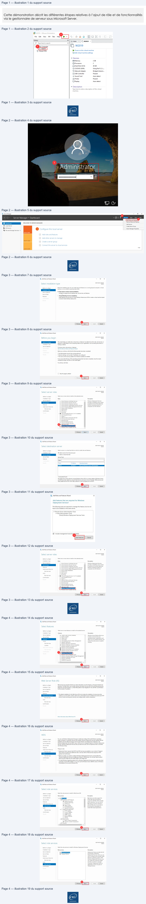
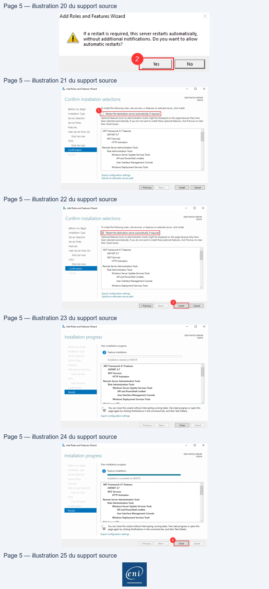
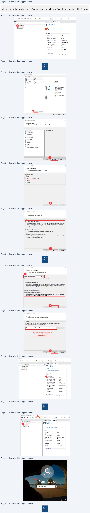
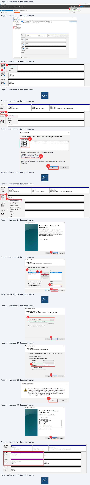
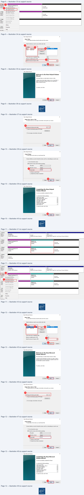
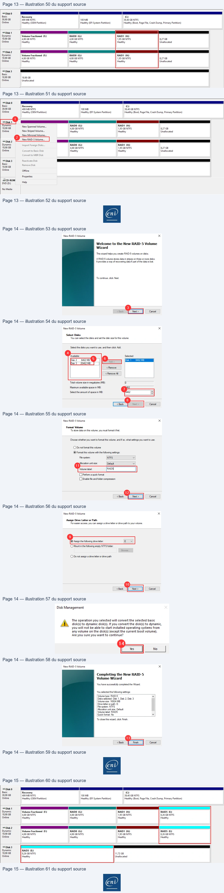
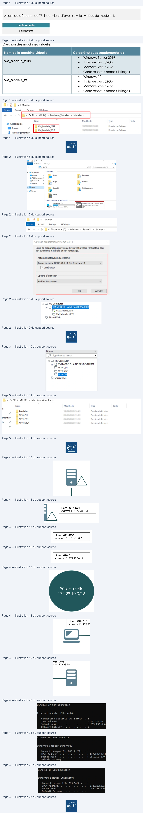
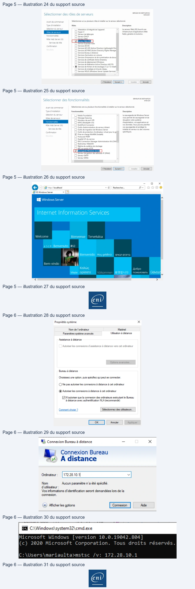
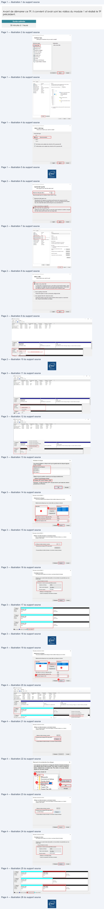
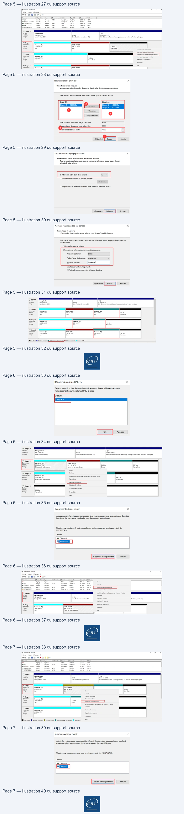

Module 01 — Administration Windows¶
La transcription du support Drive et l’aide pédagogique sont séparées pour rendre leur provenance explicite.
SOURCE DRIVE · TRANSCRIPTION DU SUPPORT
Le contenu des documents du dossier TSSR est transcrit ci-dessous, page par page. Les textes, tableaux et illustrations sont intégrés à la page Web ; aucun PDF ENI n’est diffusé par ce lecteur. Les versions et les consignes restent celles des supports de formation. Les compléments IA sont conservés dans leur onglet distinct.
Support · Module 01 – Support de cours · 29 pages transcrites
Page 1
Services réseau en
environnement Microsoft
Module 01 – Administration Windows
Texte relevé dans les illustrations
End
Page 2
Administration Windows
Objectifs
• Connaître Microsoft Server et son biotope
• Gérer le stockage du serveur et le RAID
Lecture continue du texte source
Administration Windows
• Connaître Microsoft Server et son biotopeObjectifs
• Gérer le stockage du serveur et le RAIDTexte relevé dans les illustrations
SertRés"
Undone
Page 3
Administration Windows
Version des systèmes d’exploitation Microsoft
Les deux familles
• Les systèmes d’exploitation serveur
Windows 2008
Windows 2012
& R2
& R2
Windows 2016
Windows 2019
Windows 2022
Windows 2025
Ces versions ont la capacité de fournir un ensemble de services au sein d’une infrastructure
• Les systèmes d’exploitation client
Windows 7
Windows 8 & 8.1
Windows 10
Windows 11
Ces systèmes sont en règle générale utilisés en tant que station de travail par les utilisateurs
Page 4
Administration Windows
Version des systèmes d’exploitation Microsoft
Les différentes éditions Windows Server
Standard
Datacenter
Essentials
512 Mo de RAM en mode Core
2 Go de RAM
Prise en charge matérielle
2 Go de RAM avec expérience utilisateur
CPU 1,4 GHz 64 bits – 1 sock.
CPU 1,4 GHz 64 bits
160 Go de stockage avec une
(minimum)
32 Go de stockage disque
partition système de 60 Go
Droits à la virtualisation
Pas de licence pour virtualiser
2 VMs
Nombre illimité de VMs
et spécificités
Pas de CALs
Mode de licence
Basé sur les cœurs CPU (16 cœurs / 1 licence)
Licence serveur

Page 5
Administration Windows
Version des systèmes d’exploitation Microsoft
Quelques rappels sur les licences
Licence d’Accès
Licence du Système
Client SE
d’Exploitation (SE)
Licence du SE du
client
Installation du produit
Mise en œuvre des services
Accès aux services depuis
d’autres postes
Certains services peuvent
nécessiter des CAL
supplémentaires (RDS)
Accès aux rôles
Texte relevé dans les illustrations
S
=>
Page 6
Administration Windows
Les services pris en charge par Windows Server
• L’ajout d’un serveur dans un contexte d’entreprise permet de fournir des
services spécifiques.
• Un ensemble de services est nativement pris en charge par les systèmes
d’exploitation Windows Server. Ceux-ci seront présentés ci-après.
• Bien d’autres solutions, outils, applications, non présentés ici, peuvent être
mis en œuvre sur les systèmes d’exploitation serveur (serveur de messagerie
Exchange, serveur de bases de données Microsoft SQL).
Page 7
Administration Windows
Les services pris en charge par Windows Server
Les services de domaine pris en charge
Les systèmes d’exploitation serveur prennent en charge les composantes de services
Active Directory suivants :
Services
Description
Services de domaine Active Directory (AD DS)
Ce rôle fournit la gestion de contextes de domaine Active
Directory.
Service de fédération AD (AD FS)*
Services fédérés de gestion des identités.
Services de gestion des droits Active Directory
Protection des ressources contre une utilisation non autorisée,
basée sur l’utilisation de certificats (permet notamment
d’interdire la copie ou l’impression d’un fichier).
(AD RMS)*
Services de certificat Active Directory (AD CS)*
Service de gestion d’une autorité de certification (fournit une
infrastructure à clef publique).
* Non vus pendant ce cours.
Page 8
Administration Windows
Les services pris en charge par Windows Server
Les autres services pris en charge (liste non exhaustive) :
Services
Description
DNS
Service de résolution de noms d'hôtes
DHCP
Service de gestion de l'adressage IP
Hyper-V
Permet de créer un environnement informatique virtualisé dans lequel vous
pouvez créer et gérer des machines virtuelles.
Service de déploiement WDS
Service de déploiement de systèmes d’exploitation Windows à travers le réseau.
WSUS
Fournit une prise en charge centralisée des mises à jour des produits Microsoft.
Services d’impression et de
numérisation de document
Permet d’avoir une gestion centralisée de vos périphériques d’impressions.
| S i erv ces | D i ti escr p on |
| DNS | Servi d ré sol uti d d'hôtes ce e on e noms |
| DHCP | Servi ce d e gesti on d e l'ad ressage IP |
| H yper-V | Permet d e cré er un envi ronnement i nf ormati que vi rtuali sé d ans l equel vous pouvez cré er et gé rer d es machi nes vi rtuell es . |
| S ervi ce d e dé pl oi ement WDS | Servi ce d e dé pl oi ement d e systè mes d’expl oitati on Wi nd ows à travers l e ré seau . |
| WSUS | Fournit pri ch centrali sé d mi à j d prod uits Mi crosoft une se en arge e es ses our es . |
| S ervi ces d’i mpressi on et d e numé ri sati on d e d ocument | Permet d’avoi r une gesti on centrali sé e d e vos pé ri phé ri ques d’i mpressi ons . |

Page 9
Administration Windows
Installation du système et composants
Les modes d’installation
• Installation minimale / Server Core :
• Sans environnement graphique
• Depuis Windows Server 2008
• Mode d’installation par défaut
• Les commandes PowerShell peuvent être utilisées pour gérer un serveur Core
• Installation graphique ( « Expérience de bureau »)
• Avec environnement graphique (GUI : Graphical User Interface)
Page 10
Installer Windows Server 2019 Standard
Démonstration
Texte relevé dans les illustrations
End
Page 11
Administration Windows
Installation du système et composants
Les rôles et fonctionnalités
• Des composants peuvent être ajoutés par :
• Le gestionnaire de serveur
• Des commandes PowerShell
• Deux types de composants :
• Les rôles : correspond généralement à un service que l’on fournit à des clients
• Les fonctionnalités : correspond généralement à un outil/composant utile sur l’élément sur
lequel on l’ajoute
Page 12
Administration Windows
Installation du système et composants
Les outils de gestion de Windows Server
Les différents outils sont :
• Le Gestionnaire de serveur :
• Élément central d’administration du ou des serveurs
• Les consoles de gestion des services :
• Disponibles suite à l’ajout d’un rôle sur un serveur
• Peuvent être ajoutées sur un poste d’administration ne disposant pas du rôle à gérer
• La console PowerShell
• Ligne de commande (CMD)

Page 13
Démonstration
Texte relevé dans les illustrations
Démonstration
Gnd
Page 14
M01TP01 - Installation et configuration initiale
TP
Page 15
Administration Windows
Gestion du stockage
Les outils
Ce que nous allons voir
Les tables
de partition
Gestion des
Les ensembles
disques
de stockage
Les types de
configuration
RAID
de disques
Page 16
Administration Windows
La table de partitionnement
• Stockée en début de disque (et fin de disque si GPT)
• Détermine les caractéristiques des partitions créées sur un disque
• Nombre
• Taille
• Position
• Héberge un chargeur d’amorçage
• 2 formats existent:
• MBR (années 80)
• GPT (années 2000)
•
BIOS UEFI obligatoire

Page 17
Administration Windows
Les formats de tables de partition
Caractéristiques de formats de partitionnement
• Le partitionnement MBR
• 4 partitions physiques (dont 1 étendue) max
• Limite de taille d’une partition à 2,2 To max
• Le partitionnement GPT
• Meilleure tolérance aux pannes (Données dupliquées en fin de disque)
•
Possibilité de reconstruction
• 128 partitions physiques
• Possibilité de conversion
MBR
Conversion OK avant que le disque ne contienne des données
GPT
Texte relevé dans les illustrations
Sms)
Page 18
Administration Windows
Les types de configuration des disques
Les configurations de disques sous Windows
2 types de configurations :
• Configuration de base
• Simplifie la gestion du disque
• Toutes les données sont inscrites dans des partitions physiques
• Sur un seul disque physique
• Configuration dynamique
• La gestion se fait par ensemble de disques
• Les données sont inscrites dans des volumes
• Nécessaire pour le RAID logiciel
De
base
Sans incidence pour les données
Dynamique
• Conversion
De
base
Nécessite la suppression préalable des volumes
Dynamique
Texte relevé dans les illustrations
CDSf
S™
»
—
ee)
Es
Page 19
Administration Windows
Partitionnement physique (MBR)
Partition étendue
Lecteur logique
Partition principale 1
Partition principale 2
Partition principale 3
Lecteur logique
Partitionnement d’un disque de base
• Sur un disque de base, on peut créer au maximum soit :
• 4 partitions principales
• 3 partitions principales et 1 partition étendue dans laquelle on crée des lecteurs logiques
•
Les lecteurs logiques seront formatés
• Les partitions peuvent être étendues ou réduites sur l’espace contigu du même
disque.
• Le lancement d’un OS à partir d’un lecteur logique n’est pas possible.
Texte relevé dans les illustrations
S
Page 20
Administration Windows
Partitionnement et RAID
Partitionnement d’un disque dynamique
• Il est composé de volumes qui peuvent être de plusieurs types :
• Volume simple
• Volume fractionné
• Volume agrégé par bandes
• Volume en miroir
• Volume agrégé par bandes avec parité
• RAID (Redundancy Array of Inexpensive Disk)

Page 21
Administration Windows
Partitionnement et RAID
Le volume simple
On parlera d’espace disque.
• C’est le seul type de volume qui utilise un seul disque physique
Volume simple 1
Volume simple 2
Espace libre
• Il peut être étendu au sein du même disque
Volume simple 1
Volume simple 2
Volume simple 1
Espace libre
Texte relevé dans les illustrations
=>
S=
=>
S
—
Page 22
Administration Windows
Partitionnement et RAID
Le volume fractionné
Un volume fractionné utilise plusieurs espaces sur plusieurs disques physiques.
• Situation initiale
Volume simple 1
Volume simple 2
Espace libre
Espace libre
• Extension du volume simple 2 sur le disque dynamique 2
Volume simple 1
Volume simple 2
Espace libre
Volume simple 2
Espace libre
Disque 1
Disque 2
Disque 1
Disque 2
Texte relevé dans les illustrations
=>
Ss
is
=>
S
is
Page 23
Administration Windows
Partitionnement et RAID
Le volume agrégé par bandes
Le RAID-0 ou volume agrégé par bandes en est un type :
Volume simple 1
100 Go
Volume agrégé par bandes
200 Go
Vue logique
Vue physique
100 Go
Espace libre
RAID 0
Disque 1
Disque 2
A1
A2
A3
A4
A5
A6
Disque 1
Disque 2
• La taille des bandes doit être identique sur chaque disque
• Réparti sur 2 à x disques
• Rapidité de lecture/écriture accrue
• Aucune tolérance de panne
• Tout l’espace disque alloué est utilisable
Lecture continue du texte source
Administration Windows
Partitionnement et RAID
Le volume agrégé par bandes
Le RAID-0 ou volume agrégé par bandes en est un type :
1
physique Disque Volume simple 1 Volume agrégé100parGobandes logique 200 Go
2 Vue Vue 100 Go Espace libre Disque RAID 0
A1 A2 • La taille des bandes doit être identique sur chaque disque
• Réparti sur 2 à x disques A3 A4
• Rapidité de lecture/écriture accrue
A5 A6 • Aucune tolérance de panne
• Tout l’espace disque alloué est utilisable Disque 1 Disque 2Texte relevé dans les illustrations
—
Page 24
Administration Windows
Partitionnement et RAID
Le volume en miroir
Le RAID-1 ou volume miroir en est un type :
Volume simple 1
100 Go
Volume en miroir
100 Go
Vue logique
Vue physique
100 Go
Espace libre
Disque 1
Disque 2
RAID 1
A1
A1
A2
A2
A3
A3
Disque 1
Disque 2
• Réparti sur 2 disques
• L’espace alloué sur les 2 disques doit être identique
• Les mêmes données sont écrites simultanément sur les 2 disques
• Tolérances aux pannes accrues, un des disques peut être perdu
sans impact sur les données
• La moitié de l’espace disque alloué n’est pas directement utilisable
Lecture continue du texte source
Administration Windows
Partitionnement et RAID
Le volume en miroir
Le RAID-1 ou volume miroir en est un type :
1
physique Disque Volume simple 1 Volume100en miroirGo logique 100 Go
2 Vue Vue 100 Go Espace libre Disque
RAID 1
• Réparti sur 2 disques A1 A1
• L’espace alloué sur les 2 disques doit être identique
A2 A2 • Les mêmes données sont écrites simultanément sur les 2 disques
• Tolérances aux pannes accrues, un des disques peut être perdu A3 A3
sans impact sur les données
• La moitié de l’espace disque alloué n’est pas directement utilisable Disque 1 Disque 2Texte relevé dans les illustrations
— —
se

Page 25
Administration Windows
Partitionnement et RAID
Le volume agrégé par bandes avec parité
Le RAID-5 ou volume agrégé par bandes avec parité en est un type :
Volume simple 1
100 Go
200 Go
Volume en miroir
Vue logique
RAID 5
100 Go
Espace libre
Disque 1
Disque 2
Volume agrégé par bandes avec parité
Vue physique
A1
A2
Ap
100 Go
Espace libre
Disque 3
B1
Bp
B2
Cp
C1
C2
• 3 disques minimum
• 1 disque (espace d’une bande) est alloué à la tolérance de panne
• RAID offrant un compromis tolérance panne / coûts
Disque 1
Disque 2
Disque 3
Page 26
Administration Windows
Formatage et outils
Formatage
Partitionnement
• Les partitions principales, lecteurs logiques et volumes
doivent être formatés avant d’être utilisables.
Formatage
• Le formatage est l’installation d’un système de fichier
(hébergement des données).

• Les systèmes de fichiers disponibles sont :
FAT32 / exFAT
NTFS
Depuis Windows NT
ReFS
Depuis Windows 2012
(pour les espaces de stockage)
Texte relevé dans les illustrations
a
TZ
=
=
= DS
=
>
= EN
=
Page 27
Administration Windows
Formatage et outils
Les outils
• La console de Gestion des disques (diskmgmt.msc)
• La commande (CMD) diskpart
• Les commandes PowerShell
Texte relevé dans les illustrations
fF Gestion des disques
-
D
x
Fichier
Action
Affichage?
emma
Seles
_
.
=@
Siig
Done
MR
Sain (Dem
5946 Go
4617Go
78%
ES Administrateur: Invite de commandes - diskpart
SReseréausystime
Simple
Debase
NTFS
Sain (Syste...
549 Mo
5I7Mo MX
ticrosoft Windows [version 10.0.17763.475]
(c)
2018
Microsoft
Corporation.
Tous
droits
réservés.
ane ec
at
EN Administrateur
: Windows PowerShell
Windows
PowerShell
ticrosoft DiskPart
version
10.0.17763.1
opyright
(C)
Microsoft Corporation.
Tous droits réservés.
EE
CPyright
(C)
Microsoft Corporation.
5 C:\Users\Administrateur> Get-Command
Storage
Debase
Réservéau
système
;
on
1?
inat
…
WIN-GLMUCVKAF 26
En ligne
Sain (Système Acti, Partition principle ||Sain (Démarrer Fichier d'échange. Videge sur incident, Parton principe
= qe
Oo
Debase
50060
50060
@
Enligne
Non alloué
I Non alloué Il Partition principale
Page 28
Gestion du stockage
Démonstration
Texte relevé dans les illustrations
End

Page 29
M01TP02 - Gestion du stockage
TP

Référence du document : 1v0jBGuIPpEKDn1pkUIXbEnE7W21_DXVC · SHA-256 bb53066775c91dbf…
Démonstration · Fiche démo 1 - Installation du système · 9 pages transcrites
Page 1
Services réseau en environnement Microsoft
Installation du système
Windows Server
Démonstration 01 du module 01
Cette démonstration décrit les différentes étapes relatives à l’installation du système Microsoft
Server, en mode graphique.
Déroulement
•
Prérequis
o Disposer d’une ISO Windows Server (ici en_windows_server_2019_x64).
o Disposer d’un logiciel de virtualisation (ici VMware Workstation 15.5.2 Pro)
•
Créer votre machine virtuelle Windows Server
•
Démarrer votre VM
Il faut démarrer la nouvelle machine virtuelle en sélectionnant votre machine virtuelle puis en
cliquant sur la flèche verte.
Page 1/9
© ENI – Tous droits réservés
Texte relevé dans les illustrations
(B® w2019 - VMware Workstation
.
.
-
ra
a
Elle
Edit
View
VM
Tabs
Help
Br
©
©
©
©
FJ Oo
|
+
i
x
SEE)
@ Home
C1 w2019
D
Type here to search
+
a CJMy Computer
i W2019
W2019
Ci Shared VMs
> Power onthis virtual machine
à
<
Il est possible d'ajuster les
[FF Edit virtual machine settings
paramètres en fonction de vos
besoin. Attention toutefois à
:
respecter les prérequis.
+ Devices
Æ Memory
2GB
££} Processors
2
(Hard Disk (SCSI)
40GB
© CD/DVD (SATA)
Using file F:\2. L...
F3 Network Adapter
Bridged (Autom...
USB Controller
Present
di Sound Card
Auto detect
= Printer
Present
CDispla
Auto detect
ent
Page 2
Services réseau en environnement Microsoft
•
Booter sur le CD afin de lancer le processus d’installation du système d’exploitation
Il faut appuyer sur n’importe quelle touche du clavier afin de démarrer le processus d’installation
de votre système d’exploitation (ici la touche « espace » sera utilisée).
•
Choisir sa région puis continuer le processus.
Il convient ici de choisir la région afin de continuer le processus.
Ici :
•
La langue d’installation sera l’Anglais
•
Le fuseau horaire sera celui de Paris
•
Les préférences du clavier seront Françaises
•
Lancement de l’installation du système d’exploitation
Ici, cliquer sur le bouton Install now (1) afin de passer à l’étape suivante.
Page 2/9
© ENI – Tous droits réservés
Texte relevé dans les illustrations
(& w2019 - VMware Workstation
File
Edit
View
VM
Tabs
Help
¥
ia)
D
IR}
Sy
* ||
Home
(F] w2019
O
Typehere
to
search
+
2019
(© MyComputer
i W2019
Le 20199)
CT Shared VMs
1
>
Power on this
virtual machine
[Ep Edit
virtual machine settings
Press any key to boot from CD or DVD...
od Windows Setup
==]
Windows Server’ 2019
1
Enter your language and other preferences and click "Next" to continue.
2
Page 3
Services réseau en environnement Microsoft
•
Passer outre l’activation du système
Ici, cliquer sur le texte I don’t have a product key (1) pour passer à l’étape suivante.
•
Choisir la version du système d’exploitation que vous souhaitez installer.
C’est ici que s’opère le choix de la version du système d’exploitation. Ici, nous choisirons Windows
Server 2019 Standard (Desktop Experince)(1) puis cliquer sur le bouton « Next » (2) pour passer à
l’étape suivante.
Attention : Ssi Windows Server 2019 est sélectionné, seule la version Core sera installée (sans
interface graphique).
Page 3/9
© ENI – Tous droits réservés
Texte relevé dans les illustrations
old Windows Setup
bo). 8
Windows Server: 2019
1
Install now
Repair your computer
© 2018 Microsoft Corporation.
All rights reserved.
x
©) Gj Windows Setup
Activate Windows
If this is the first time you're installing Windows on this PC (or you're installing a different edition)
you need to enter a valid Windows product key. Your product key should be in the confirmation
email you received after buying a digital copy of Windows or on a label inside the box that
Windows came in.
The product key looks like this:XXXXX-XXXXX-XXXXX-XXXXX-XXXKK
If you're reinstalling Windows, select
I don’t have a product key. Your copy of Windows will be
automatically activated later.
|
EE]
1
Privacy
statement
I don't have a product ke
Next
Page 4
Services réseau en environnement Microsoft
•
Validation du contrat de licence Microsoft
Pour passer à l’étape suivante, il faut accepter le contrat de licence de Microsoft en cochant la
case (1) puis en cliquant sur le bouton Next (2) pour passer à la suite.
•
Choix du type d’installation
Choisir Custom: Install Windows only (advanced) (1) afin de passer à la suite.
Page 4/9
© ENI – Tous droits réservés
Texte relevé dans les illustrations
Sc
re) 2% Windows Setup
a
Select the operating system you want to install
1
Operating system
Architecture
Date modified
Windows Server 2019 Standard
x64
9/15/2018
Windows Server 2019 Standard (Desktop Experience)
x64
9/15/2018
Windows Server 2019 Datacenter
x64
9/15/2018
Windows Server 2019 Datacenter (Desktop Experience)
x64
9/15/2018
Description:
(Recommended) This option omits most of the Windows graphical environment. Manage with a
command prompt and PowerShell, or remotely with Windows Admin Center or other tools.
En fonction des besoins, le choix de la version
peut différer
I
re) 1G Windows Setup
—
Applicable notices and license terms
IMPORTANT NOTICE (followed by LICENSE TERMS)
a)
Diagnostic and Usage Information. Microsoft automatically collects this
information, which may be associated with your organization, over the
internet, and uses it to help improve your installation, upgrade, and user
experience, and the quality and security of Microsoft products and services.
Windows Server has four (4) information collection settings (Security, Basic,
Enhanced, and Full), and uses the “Enhanced” setting by default. The
Enhanced level includes information required to: (i) run our anti-malware and
diagnostic and usage information technologies; (ii) understand device
quality, and application usage and compatibility; and (iii) identify quality
issues in the use and performance of the operating system and applications.
Choice and Control: Administrators can change the level of information
v
1
2

Page 5
Services réseau en environnement Microsoft
•
Localisation de l’installation du système d’exploitation
Par défaut, nous n’avons qu’un seul disque dans notre VM (1). Cliquer sur le bouton Next (2).
•
Démarrage de l’installation
L’installation a démarré
Page 5/9
© ENI – Tous droits réservés
Texte relevé dans les illustrations
le si Windows Setup
Which type of installation do you want?
Upgrade: Install Windows and keep files, settings, and applications
The files, settings, and applications are moved to Windows with this option. This option is only
available when a supported version of Windows is already running on the computer
1
Custom: Install Windows only (advanced)
The files, settings, and applications aren't moved to Windows with this option. If you want to
make changes to partitions and drives, start the computer using the installation disc. We
recommend backing up your files before you continue.
TS
re) Gj Windows Setup
Where do you want to install Windows?
1
~
Name
Total size
Free space
Type
«37
Drive0 Unallocated Space
40.0 GB
40.0 GB
4 Refresh
A Delete
OP Format
He New
@ Load driver
À Extend
2
Cne||
Page 6
Services réseau en environnement Microsoft
•
Modification du mot de passe Administration
Une fois l’installation terminée, la VM redémarrera automatiquement. Sur cet écran, il faudra
customiser le mot de passe administrateur (1) puis cliquer sur le bouton Finish afin de finaliser le
processus de configuration.
•
Finalisation de l’installation
À la suite de la modification du mot de passe Administrateur, la page de connexion au serveur
Page 6/9
© ENI – Tous droits réservés
Texte relevé dans les illustrations
a.
Gj Windows Setup
Installing Windows
Status
Jf Copying Windows files
Getting files ready for installation (2%)
Installing features
Installing updates
Finishing up
1 Type a password for the built-in administrator account that you can use to sign in to this computer.
User name
2
>
Finish
Page 7
Services réseau en environnement Microsoft
apparaît.
•
Test de connexion au serveur
Sur la mire de connexion appuyer sur les touches de votre clavier « Ctrl » « Alt » » Inser »
simultanément afin de pouvoir renseigner le login et mot de passe (1) puis appuyer sur la touche
« Entrée » du clavier pour accéder au bureau du serveur.
•
Installation des VMware Tools
Pour finaliser l’installation et faciliter un certain nombre d’actions (presse-papier par exemple)
Page 7/9
© ENI – Tous droits réservés
Texte relevé dans les illustrations
#
File.
,
Ps CsA
to nec.SS
-
=
dd
14:56
vendredi 21 août
<j
Q me
Administrator
SS
Oe
Page 8
Services réseau en environnement Microsoft
l’installation des VMware Tools est nécessaire.
Faites un clic droit sur l’onglet portant le nom de la VM (1) puis cliquer sur Install VMware Tools… (2)
•
Lancement de l’installation de VMware Tools
Ouvrir l’explorateur de document (1) puis double cliquer sur le DVD Drive (D :) VMware Tools (2)
•
Installation de VMware Tools
Cliquer sur le bouton Suivant (1) pour démarrer l’installation. Cliquer sur le bouton Suivant (2) afin de
Page 8/9
© ENI – Tous droits réservés
Texte relevé dans les illustrations
(G! W2019 - VMware Workstation
File
Edit
View
VM
Tabs
Help
H-
©
Le
DE HER
T
1
i
x
5)
pe here to search
%
lose Tab
=| 1 MyComputer
©
Power
>
[Tp W2019
©
Removable Devices
>
rJ Shared VMs
Pause
a
Send Ctrl+Alt+Del
Grab Input
[F&
Snapshot
>
Server Manage
Capture Screen
Manage
>
2
Install VMware Tools...
PSS
À Dashboarl
B
local Serv
1
~
rn
15:06
s
©
ft
@
BB
ss
A
te 0200 A
Bl\P
+ | This PC
-
Qo
x
| Fite | Computer
View
e
_
4 G >ThisPC
v ® | Search
This PC
P
Yo Quick access
Folders (7
MI Desktop
3D Objects
Desktop
Ÿ Downloads
|]
En
=] Documents
Documents
Downloads
="
+
EM This PC
h Music
Pictures
> Network
@
Ls
a Videos
Devices and drives
(2)
2
Local Disk (C:)
DVD Drive (D:) VMware Tools

Page 9
Services réseau en environnement Microsoft
continuer l’installation. Cliquer sur le bouton Suivant pour engager l’installation (3)
Cliquer sur le bouton Terminer (4) pour finaliser l’installation.
•
Redémarrage VM suite installation VMware Tools
Cliquer sur le bouton Oui (1) afin de redémarrer la VM et la prise en compte des paramètres des
VMware Tools nouvellement installés.
Page 9/9
© ENI – Tous droits réservés
Texte relevé dans les illustrations
15 Installation de VMware Tools
—
x
#1 Installation de VMware Tools
—
x
vmware’
Bienvenue dans l'assistant d'installation de
VMware Tools
Veuilez sélectionner un type d'instalation.
assistant d'installation va installer VMware Tools sur votre
© Typique
.
;
ordinateur. Pour continuer, diquez sur Suivant.
Installe les fonctionnalités du programme utilisées uniquement parce
produit VMware. Sélectionnez cette option si vous envisagez d'exécuter
cette machine virtuelle uniquement avec ce produit VMware.
Copyright (c) 1998-2020 VMware, Inc. Tous droits réservés.
.
Ce produit est protégé par des lois sur le droit d'auteur et la
O complète
propriété intellectuelle aux Etats-Unis et dans d'autres pays,
Installe toutes les fonctions du programme. Sélectionnez cette option si
ainsi que par des traités internationaux. Les produits
& eeeSe ees
VMware sont couverts par un ou plusieurs brevets dont la
VMware.
RER
iste figure à l'adresse
installations en fonction de vos
http://www. vmware.com/go/patents-fr.
O Personnalisé
Ferre
ie
Vous permet dechoisir les fonctions du programme à installer et où les
vmware
instaler, Seis ls tlsatews avancés doivent sélectionne cette
1
2
< Précédes
[suivant > ||
|
Annuler
| <Précéden
Annuler
1
Installation de VMware Tools
—
x
18 Installation de VMware Tools
-
x
vmware
Assistant Installation de VMware Tools
terminé
Cliquez sur Installer pour commencer l'installation. Cliquez sur Précédent pour vérifier ou
modifier vos paramètres d'instalation. Cliquez sur Annuler pour quitter l'Assistant.
Clavele bouton Terminer pour quitter [Assistant
3
4
< PrécédentD)
Annuler
< Précédent
Annuler
5 Installation de VMware Tools
Vous devez redémarrer votre système pour que les
modifications apportées à la configuration de VMware
Tools prennent effet, Cliquez sur Qui pour redémarrer
maintenant, ou sur Non pour redémarrer manuellement
ultérieurement.
ent

Référence du document : 1-f_7dFPPZj41QBGVHhPoKRH8sQECoJlG · SHA-256 6dc10da4c91f445e…
Démonstration · Fiche démo 2 - Ajout de rôles et de fonctionnalités via le gestionnaire de serveur · 5 pages transcrites
Page 1
Services réseau en environnement Microsoft
Ajout de rôles et de
fonctionnalités via le
gestionnaire de serveur
Démonstration 02 du module 01
Cette démonstration décrit les différentes étapes relatives à l’ajout de rôle et de fonctionnalités
via le gestionnaire de serveur sous Microsoft Server.
Déroulement
•
Prérequis
•
Avoir suivi la démonstration 1 du module 1.
•
Avoir installé et configuré une VM Windows Server.
•
Démarrer la machine virtuelle
Sélectionner la VM utilisée lors de la précédente démonstration (1) (ici W2019), puis cliquer sur le
bouton démarrer (2).
•
Se connecter à la VM
Utiliser le compte Administrateur ainsi que le mot de passe associé (1).
Page 1/5
© ENI – Tous droits réservés
Texte relevé dans les illustrations
File
Edit
View
VM
Tabs
Help
9 e2
Dean
.
Lier
* || @ Home
[D w2o19
En
IF) w2019
(Ey w2019
© Shared VMS
D> Power on this virtual machine
[CZ Edit virtual machine
settings
+ Devices
Memory
268
LYProcessors
2
Hard Disk (SCSI)
4068
© CD/DVD (SATA)
Using file F:\2. L..
F3 Network Adapter
Bridged (Autom...
USB Controller
Present
do Sound Card
Auto detect
& Printer
Present
CDisplay
Auto detect
+ Description
Type here to enter a description of this virtual
machine.
Page 2
Services réseau en environnement Microsoft
•
Accès à la console d’installation.
Lors de l’accès à la session du serveur, le Gestionnaire de Serveur ou «Serveur Manager se lance
automatiquement.
Pour lancer la console permettant l’ajout d’un rôle, cliquer sur Manage ou Gérer (1) puis sur Add
Roles and Features ou Ajout de Rôles et Fonctionnalités (2).
•
Choix du rôle à installer.
Cliquer sur le bouton Next (1), puis encore une fois sur le bouton Next (2). Sur l’écran Select
destination server, cliquer sur le bouton Next (3). Sur l’écran Select server roles, cocher la case
Windows Déployment Services (4). Sur la fenêtre contextuelle qui vient d’apparaître, cliquer sur le
bouton Add Features (5), puis sur le bouton Next (6).
Page 2/5
© ENI – Tous droits réservés
Texte relevé dans les illustrations
1
ad
Fa
EC
a Server Manager
-
x
1
Server Manager * Dashboard
-@1 Pwnage)
Tools
View pice
Remove Roles and Features
WELCOME
TO SERVER MANAGER
=
à Local Server
Create Server Group
ij File and Storage Services
D
~
7
°
quick starr
Hide
LEARN MORE
Page 3
Services réseau en environnement Microsoft
•
Choix de la fonctionnalité à installer.
Cocher la case Windows Server Backup (1) puis cliquer sur le bouton Next (2). Sur l’écran Web Server
Role (IIS), cliquer sur le bouton Next (3). Sur l’écran Select role services, cliquer sur le bouton Next
(4). Sur l’écran WDS, cliquer sur le bouton Next (5). Sur l’écran Select role services, cliquer sur le
bouton Next (6).
Page 3/5
© ENI – Tous droits réservés
Texte relevé dans les illustrations
-
Hi, Add Roles and Features Wizard
-
ox
Tia Add Roles and Features Wizard
-
ax
DESTINATION SERVER
DETIUTON SERVER
Select installation type
wane
Before you begin
wae
clore ou Bagh
Select the installation type. You can instal roles and featureson à running physical computer or virtual
“This wizardhelps
you instal roles, ole services or features, You determine which roles role services,or
2
machine o on an offine virtual hard dik (VHD).
teres oral eased onthe computing neds of your genie su as sag documents oF
Installation Type
hosting à website
Server Selection
© Role-based or feature-based installation
Server Selection
——
Configure a single server
by adding roles, role services, and features.
To remove oes role services or features:
Server Roles
Start the Remove Roles and Features Wizard
Features
© Remal/Desktop
Services installation
——
Install required role services for Virtual Desktop Infrastructure (VDI) to create a virtual machine-based
Before you continue vey thatthe following tasks have been completed:
pared
+ The Administrator account hasa strong password
+ Network settings, suc a static IP addresses, are configured
+The most eurent security updates from Windows Update ae installed
ifyou must very that any ofthe preceding prerequisites have been completed, close the wierd,
complete the steps and then run the wizard again
To continue, click New
Skip this page by default
= —
insat_|
[Eceneel]
on ee]
Liu
[<Previous]
[tvs] Cet]
‘Tia Add Roles and Features Wizard
-
a
x
‘Tia Add Roles and Features Wizard
-
a
x
Select destination server
waste
Select server roles
ware
peters ou been)
Selectaserver
ora virtua hard disk on which to install roles and features
Corer
Select one or more role to instal on the selected server.
Installation Type
© Select
a server from the server pool
Installation Type
Roles
Description
O Selecta virtual hard ik
Server Selection
LL Active Directory Cotfcte Senices
7]
Windows Deployment Services
x
(Ll acte Directory Federation Services
of rapidly and remotely deploying
Features
Features
[] Active Directory Lightweight Directory Services
Windows operating systems to
per7
Web Server Roe)
C] Ace Decry Rights Management Series
computers overthe network.
(LI Device Heath Attestation
Æ
EXE
Dr
2
me
Confirmation
ZI DNS Serer
W2019
19216817
Microsoft Windows Server 2019
Standard
Dre
»
Ill Fi and Storage Services (1 of 12 installed)
LL] Host Guardian Service
CO Hyperv
IL] Network Poly and Access Services
Print and Document Services
L] Remote Access
Remote Desktop Services
11 Computer's) found
[1 Volume Activation Services
This page shows serversthat are runing Windows Server2012
or à newer release
of Windows Server,
Que
sus
and that have been added by using the Add Servers command in Server Manager. Offline servers and
tions
Deployment
Service]
newy-added servers from which data collection i stil incomplete aent shown,
LT Windows Serer Update Services
5
Install
nal
a Add Roles and Features Wizard
x
Fa Add Roles
and Features Wiard
-
ao
x
DESTINATON SRVER
Add features that are required for Windows
Select server roles
wa018
Deployment Services?
Before You Begin
Select one or more roles to install onthe selected server.
The following tools are required to manage this feature, but do not
instalation Type
ne
a
have to be installed on the same server.
server
selec
ere Seen
LL) Active Directory Certificate Services
A]
Windows Deployment Series
5 ace estoy Doman Sens
pdainp secre ears
4 Remote Server Administration Tools
=
Active Directory Federation Services
of rapidly
and remotely deploying
4 Role Administration Tools
resale
Active Directory Lightweight Directory Services
Windows operating systems to
[Tools] Windows Deployment Services Tools
Web Server Role
(IIS)
[1 Active Directory Rights Management Services
computers over the network.
a
El Device Heath Attestation
Role Services
Fy pach seer
wos
[1 ONS Server
.
Bl Faxserver
Role Services
[File and Storage Services (1 of 12 installed)
Confirmation
1 Host Guardian Senice
CO Hyper
LE Network Policy and Access Services
Ey Print and Document Services
LE] Remote Access
LE] Remote Desitop Services
[1 Volume Activation Services
Include management tools (if
gamiicable)
Peano: Depioyment sence
5
D Wow
Server UNE
SE
==
6
rerous [[_Nex>|
ist
>ent
Page 4
Services réseau en environnement Microsoft
•
Confirmation de l’installation
Cocher la case Restart the destination serveur automatically if required (1) puis cliquer sur le bouton
Yes (2) de la fenêtre contextuelle. Enfin, cliquer sur le bouton Install (3). Enfin, quand le processus
d’installation est terminé, cliquer sur le bouton Close (4).
Page 4/5
© ENI – Tous droits réservés
Texte relevé dans les illustrations
a Add Roles and Features
Wizard
-
a
x
fa Add Roles andFeatures
Wizard
-
ao
x
DESTINATION SeRVER
DESTINATON SERVER
Select features
wae
Web Server Role (IIS)
Wars
Eo
Select one or more features to install on the selected server.
CC
Web servers ar computers that lt you share information over he Internet, or through intranets and
a
etranets The Web Server role includes Intemet Information Senices (I) 10.0 with enhanced zecurty,
Installation Type
Features
Description
instalation Type
diagnostic and administration, a unified Web platform that integrates IS 10.0 ASP.NET, and Windows
Serves Selection
BA System vata
Arcnwver
(SES)
7]
Windows Server Backup allows you
Server Selection
Comes Fours
CS
2 System insights
toback
up and recover your
Server Roles
1) Telnet cient
‘operating system, applications and
ier
ou can schedule
backups,
a
Features
ET
ua Managemen
Sa Vu an shel bats and
+ Theentation fortheWeb eve 5)
nhs lion
ro ec tat
wsus
© vu stingTok
29
pre etreser
especie
enable you to serve static content, make minor customizations (such as default document and HTTP
Role Services
[1 Windows Biometric Fremework
FES
or monitor and log semer activity, and configure static content compression
@
Z Windows Defender Antivirus (installed)
Content
i
L Windows identity Foundation 3.5
wos
1] Windows Internal Database
Role Services
(ml) Windows PowerShel (2 ofS installed)
era
IP] Windows Process Activation Service
Windows Search Senice
Windows Server Migration Tools
Windows Standards-Based Storage Management
C1 Windows Subsystem for Linux
Windows TIFF Fiter
C1 WinRMis Extension
.
es
>
More information about Web Server IS
2
3
[test
| Qc]
[_Nex> |
rai
| [once]
TE Add Roles and Features Wizard
_
a
x
‘Ta Add Roles and Features Wizard
-
a
x
“
DESTINATION SERVER
DESTINATION SERVER
Select role services
wane
WDS
Van
Pat
Select he role services to install for Web Server (NS)
RE
You can use Windows Deployment Services o install and configure Microsoft Windows operating
ER
7
system remotely on computers that are PXE-enabled. Windows Deployment Services replaces Remote
instalation Type
Role services
Description
Instalaton Type
insaltion Services (RIS) and assists with te rapid adoption and deployment
of Windows, The
oe
Windows Deployment Senices MMC snap-in allows you to manage alaspects
of Windows Deployment
Server Selacton
Server Selection
1
P
you to
manag
oy
ETES
a
A]
Web Server provides support for
Services. Windows Deployment Services also provides end-users with an experience thatis consistent
Server Roles
[M] Common HTTP Features
HTML Web sites and optional
Server Roles
with Windows Setup.
FA Dar Document
support for ASPNET, ASP, and Web
Features
[1 Directory Browsing
server extensions. You can use the
Features
hi
rectory
Brows
ings to note
Web Server Role (IS)
eT Errors
Web Serverto host an internal or
Web Server Role (lS)
5
F1 Static Content
external Web site or to provide an
CRT
+ Deployment Server requires that DHCP and DNS services are available on your network Transport
peste
(HTTP Redirection
environment
for developers to
=
Server does not require any additional roles or services. Both of these services require an NTFS.
Beas
4 [Health and Diagnostics
Role Services
* Before you begin, you need to configure Windows Deployment Services
by running either the
7
C2 HTTP Legging
trs
Windows Deployment Services Configuration Waar or WDSUHLexe. You wil ako needto ad at
Confirmation
D GatorLegaing
entrain
leastone boot image and one install image to the image store.
Fy topping Tot
+ To instal Windowsoperating systems from a Windows Deployment Services server, ther thecent
À ras toe
computers must be PXE-enable, or you mu ue theWindows
Serer2008 R2 version ofWindows
pre
Preinstaltion Envronment (Windows PE,
4 FM] Performance
LL State Content Compression
(Bi Oyname Content Compression
à PA Security
9
4
5
[<Previous |
instal
[<Previous T[_New>]
Insta
Ths Add Roles and Feature Wizard
-
0
x
Destaarion seven
Select role services
En
Eee
Select the role service to install for Windows Deployment Services
instalation Type
Rote services
Description
server Selection
Co”
@@<@<@| Deploymensenerpravides the full
Server Roles
| Transport Server
functionalityofWindows
Deployment
Services, which you can
Features
use to configure and remotely install
CRS)
Windows operating systems. With
“
Windows Deployment Services, you
Role Services
can create and customize images
wos
and then use them to reimage
"
computers. Deployment Serve is
dependent onthe core part ol
a
Transport Server.
6
[<Previous |
Ital
>ent

Page 5
Services réseau en environnement Microsoft
Page 5/5
© ENI – Tous droits réservés
Texte relevé dans les illustrations
a Add Rolesand Features
Wiard
-
o
x
Add Roles and Features Wizard
:
Denon sever
Confirm installation selections
wane
eo
a instal the following role, role services, orfeatures
on selected server,click Install
If a restart is required, this server restarts automatically,
:
î
without additional notifications. Do you want to allow
instalation
Type
-
:
?
server selection
Optional festures auch as admiration oo) might be played on this page because they have
automatic restarts?
Server Roles
been selected automaticaly you do not want to install these optional features cick Previous to lear
server Sos
their check boxes.
Features
eee
NET Framework47 Features
=
2
ASP.NET AT
Role
Services
|
s
WCF Services
=
ws
HTTP Activation
Role Services
Remote Server Administration Tool
RÉ
siminsraion ots
Windows Server Update Services Tools
API and PowerShell mets
User interface Management Console
Windows Deployment Services Tools
:
Net >
Ada Role and Features Ward
-
0
x
Tia Add Roles and Fetures Wizard
- ox
.
,
DESTINATION SERVER
DESTAATON SERVER
Confirm installation selections
vas
Installation progress
Vas
PC
To instal he following roles, role services or features on selected server, fick Ista
View instalation progress
server Selection
(Optional feature (such as administration tool) might be displayed on tis page because they have
costae
Be slated att. yu do ot wonton hese opin ees ck Previousee
spoon tart on W019
Features
— TT
oO
—_—_
NET Framework 4.7 Features
a
RS
NET FrameworkA7 Features
G
ASANET A?
Role Services
ASPNETAT
WCF Services
LE
WCF Senices
HTTP Activation
acer
HTTP Aetivation
Remote ServerAdminstration
Toots
Mes
Remote Server Administration
Tools
Role Administration
Tools
Windows Sener Update ences Tools
A9 nd PowerShell emaets
API and PowerShell cmdlets
User InterfaceManagement
Console
User Interface Management Console
Windows Deployment Services Tools
Windows Deployment Services Tools
PR Rone ney
You can close this wizard without interrupting running tasks View task progress or open this
En
EL. page again by cicking Notifications in the command br, and then Task Detail.
Spec
an alternate source path
Expor configuration settings
3
Tia Add Role and Features Wizard
- ax
Installation progress
°
wane
View installation progress
© Feature instalation
Installation succeeded on W209
INET Framework 47 Features
“
ASPNET47
WCE Services
HTTP Activation
Remote Server Administration Tools
Role Adminstration Tools
‘Windows Server Update Services Tools
User Interface Management Console
Windows Deployment Services Tools
You can close this wird without iteruptng runing tasks. View tack progress or open this
page again by clicking Noticaions inthecommand bar, and then Teck Details
Export
configuration settings,
4

Référence du document : 12lIBq0RuUAGY5KkavZnahA8jlVLUzxrA · SHA-256 be95d2fe09a1cb63…
Démonstration · Fiche démo 3 - Le formatage sous Windows Server · 15 pages transcrites
Page 1
Services réseau en environnement Microsoft
Le formatage sous Windows
Server
Démonstration 03 du module 01
Cette démonstration décrit les différentes étapes relatives au formatage avec les outils Windows
Déroulement
•
Prérequis
o Avoir suivi la démonstration 2 du module 1.
o Avoir installé et configuré une VM Windows Server.
•
Éditer la VM afin de pouvoir lui ajouter des disques.
Sélectionner la VM utilisée lors de la précédente démonstration (1) (ici W2019), puis cliquer sur Edit
virtual machine settings (2).
Page 1/15
© ENI – Tous droits réservés
Texte relevé dans les illustrations
File
Edit
View VM
Tabs
Help | D +
:
©
2
DUDEËr
.
Library
x { Home
[CO] w2019
CSWpeheretosearch
ÊT
1 Te
[[] w2o19
Pts
wa0rs|
Cl Shared Vs
2
D> Power
on this virtual machine
+ Devices
ÆMemory
2GB
{'FProcessors
2
EAHard Disk (SCSI)
40 GB
© CD/DVD (SATA)
Using file F:\2. L...
F3 Network Adapter
Bridged (Autom...
USB Controller
Present
do Sound Card
Auto detect
Printer
Present
Cbisplay
Auto detect
+ Description
Type here to enter a description of this virtual
machine.
Page 2
Services réseau en environnement Microsoft
•
Ajout des disques depuis les Settings de la VM (à répéter 3 fois).
Cliquer sur le bouton Add (1). Vérifier que la ligne Hard Disk est correctement sélectionnée, puis
cliquer sur le bouton Next (3). Vérifier que le bouton radio SCSI est coché, puis cliquer sur le bouton
Next (4). Vérifier que le bouton radio Create a new virtual disk est coché, puis cliquer sur le bouton
Next (5). Dans l’input box Maximum disk size (GB) : (6), choisir la taille du disque souhaité (ici 20GB).
Ici, nous sélectionnons Split virtual disk into multiple files, puis cliquer sur le bouton Next (7). Enfin,
cliquer sur le bouton Finish (8) pour finaliser l’ajout du disque sur votre VM.
Page 2/15
© ENI – Tous droits réservés
Texte relevé dans les illustrations
itual Machine Settings
x
°
.
Add Hardware Wizard
x
Hardware
Options
Device
‘Summary
Memory
Hardware Type
=
28
Ten
ages © Os wrtsl maine, The
What type ofhardware do you want to install?
Processors
2
Eard Disk (SCSI)
PT
Memory for thisvirtual machine: |
2048 1 MB
Oe
© copv (SATA)
Using
fle F:\2. Logidels\2. 0...
:
F5 Network Adapter
Bridged (Automatic)
ace
Hardware types:
Explanation
USB Controller
Present
.
isandnd
Auto detect
xo]
«
EAHard Disk
Add a hard disk.
Printer
Present
recommended
memon
Copier
fata detect
sad
.ns emory
CD/DVD Drive
108 Æ4
oei this size.)
Floppy Drive
168
«
Be
Network Adapter
sas.
1 Recommended memory
USB Controller
neue
7s
<0 Sound Card
ue
"oo recommended minimum
(Parallel Port
168
Serial Port
eme
(1 Printer
sue
(©) Generic SCSI Device
{E, Trusted Platform Module
1ee
3
ExITca]
<Back
Cancel
Add
Hardware Wizard
x
Add
Hardware Wizard
x
Select a Disk Type
Select a Disk
What kind of disk do you want to create?
Which disk do you want to use?
Virtual disk type
Disk
OWE
(© Create a new virtual disk
@scst
(Recommended)
A virtual disk is composed of one or more files on the host file system, which will
appear as a single hard disk to the quest operating system. Virtual disks can
ly be copied
ormovedon
same host or between
ts.
OSaTA
easily be
copied
ed on the same host
or between
hos!
ONvMe
Ouse an existing virtual disk
Choose this option to reuse a previously configured disk.
Ousea physical disk (for advanced users)
Choose this option to give the virtual machine direct access to a local hard disk.
Requires administrator privileges.
4
———
5
[<Back]
Next>{|
cancel
<Back
Cancel
ent
Page 3
Services réseau en environnement Microsoft
•
Vérification de l’ajout des 3 disques sur la VM.
À la fin du processus de rajout des disques sur la VM. Il doit apparaître 4 lignes Hard Disk dans les
propriétés Devices de la VM. Sélectionner la VM modifiée puis vérifier que les 3 nouveaux disques
sont bien présents (1).
Page 3/15
© ENI – Tous droits réservés
Texte relevé dans les illustrations
Add Hardware Wizard
”
Add Hardware
Wizard
:
Specify Disk Capacity
-_
,
Specify Disk File
How
large do you want this disk to be?
Where would you lke to store the disk fle?
[6
Maximum disk size (GB):
2 +
Disk file
Recommended
size for Windows Server 2016: 60 GB
A 20 GB virtual disk be created using multiple disk files. The disk files will be
automatically named based on this file name.
=
Allocating the full capacity can enhance performance but requires all of the physical
disk space to be available right now. Ifyou do not allocate all the space now, the
virtual disk starts small and grows as you add data to it.
-
-
Le nom du fichier ici pourra différer en
fonction des configurations intiales
O Store virtual disk as a single
file
opérées sur la VM
(© Split virtual disk into multiple fles
Splitting the disk makes it easier to move the virtual machine to another computer
but may reduce performance with very large disks.
7
8
cs Pre|
ms cu
File
Edit
View VM
kbs
Help | b +
| ©@2
| Mo
[
À
+
Et
X || @ Home
[Fj w2019
D
Type hereto search
Ra
à © My Computer
[FE w2019
Cl Shared VE
D> Power on this virtual machine
IC Edit virtual machine settings
+ Devices
Memory
268
EM
Processors
2
‘Gard Disk (SCSI)
40GB
EAHard Disk 2 (SCSI)
2068
ard Disk
4 (SCSI)
2068
Hard Disk 3 (SCSI)
2068
© CD/DVD SATA)
Using file FA\2. L.
2 Network Adapter
Bridged (Autom...
ŒJUS8 Controller
Present
do Sound Card
Auto detect
Printer
Present
Cisplay
Auto detect
+ Description
‘Type here to enter a description ofthis virtual
machine.
ent
Page 4
Services réseau en environnement Microsoft
•
Démarrer la machine virtuelle
Sélectionner la VM utilisée lors de la précédente démonstration (1) (ici W2019), puis cliquer sur le
bouton démarrer (2).
•
Se connecter à la VM
Utiliser le compte Administrateur ainsi que le mot de passe associé (1).
•
Accès à la console de gestion des disques.
Lors de l’accès à la session du serveur, le Gestionnaire de Serveur ou Serveur Manager se lance
automatiquement.
Page 4/15
© ENI – Tous droits réservés
Texte relevé dans les illustrations
a
File
Edit
View
VM
Tabs
Help
9e?
Dan
Lier
* || @ Home
[D w2o19
D
Type here to
search
+
Qi
IF) w2019
[C) w2019
Shared VMs
D> Power onthis
virtual machine
IF Edit
virtual machine settings
+ Devices
Memory
268
Cp Processors
2
Hard Disk (SCSI)
40 GB
©CD/DVD (SATA)
Using file F:\2. L..
2 Network Adapter
Bridged (Autom...
(USB Controller
Present
do Sound Card
Auto detect
Printer
Present
Oisplay
Auto detect
+ Description
Type hereto enter a description of this
virtual
achine.
f
æ \
1
Co “à
ale

Page 5
Services réseau en environnement Microsoft
Pour lancer la console permettant la gestion des disques, cliquer sur Tools (1), puis sur Computer
Management (2).
Management des disques
Sur la console Computer Manager, cliquer sur Disk management (1) situé dans le menu Storage.
•
Mise en ligne des disques (à répéter sur les 3 nouveaux disques).
La première étape pour pouvoir utiliser les disques nouvellement installés sur la VM est la mise en
ligne de ces derniers.
Pour ce faire, sélectionner le premier disque Disk 1 (1), puis faire un clic droit sur ce dernier afin de
pouvoir cliquer sur la ligne Online (2).
•
Initialisations des disques
La deuxième étape pour pouvoir utiliser les disques nouvellement installés sur la VM est l’initialisation
de ces éléments.
Page 5/15
© ENI – Tous droits réservés
Texte relevé dans les illustrations
Fé, Server Manager
=
x
1
Server Manager » Dashboard
~@
IP
sorage
MS
View
Hp
Be
ComponentSenices
B
Local Server
a
Disk Cleanup
& Computer Management (Local{ Volume | Unyout] Type| FaeStem] Sumas7
[Capaci | Free Space eee]
Ce
YF Stsacae
[operon See tee
Mae
pere ee TMS
np
| amine
à
220
“Ok 1 ml
ome
4
02
En
anes
es
“ODisk1
1)
20,00 GB
Offline @
Properties
1
Help
*O Disk 2
L
Unknown
20,00 GB
20,00 GB
Offline @
Unallocated
*ODisk3 LT
Unknown
20,00 GB
20,00 GB
Offline @
Unallocated
Page 6
Services réseau en environnement Microsoft
Pour ce faire, sélectionner le premier disque Disk 1 (1), puis faire un clic droit sur ce dernier afin de
pouvoir cliquer sur la ligne Initialize Disk (2).
Vérifier que les 3 disques soient bien sélectionnés (3) ainsi que le bouton radio GPT (4). Enfin, cliquer
sur le bouton OK (5).
Page 6/15
© ENI – Tous droits réservés
Texte relevé dans les illustrations
— Disko eeLe
Basic
Recovery
©
39,98 GB
499 MB NTFS
100 MB
39,40 GB NTFS
Online
Healthy (OEM Partition)
Healthy (EFI System Partition)
Healthy (Boot, Page File, Crash Dump, Primary Partition)
JTC
Unknown
au
Offline
“Disk 2
Properties |
Unknown
20,00 GB
Help
Not Initializeu
Unallocated
Initialize Disk
x
You must initiglize a disk before Logical Disk Manager can access it.
Select disk)
Disk 2
Disk 3
Use the following partition style for the selected disks:
(©) MBR (Master Boot Record 4
(@) GPT (GUID Partition Table’
Note: The GPT partition style is not recognized by all previous versions of
Windows.
5
Cancel
Page 7
Services réseau en environnement Microsoft
•
Création d’un volume fractionné
Sélectionner le Disk 1 (1), puis faire un clic droit afin de pouvoir cliquer sur la ligne New Spanned
Volume (2).
Cliquer sur le bouton Next (3).
Dans la colonne Available (4), sélectionner le Disk 2 (5), puis cliquer sur le bouton Add (6).
Dans l’input box Select the amount of space in MB, nous indiquerons « 5000 » pour les deux disques
(7), puis cliquer sur le bouton Next (8).
Sélectionner la lettre de lecteur F : (9), puis cliquer sur le bouton Next (10).
Dans l’input box Volume label, indiquer « Volume Fractionné » (11), puis cliquer sur le bouton Next
(12).
Enfin, cliquer sur le bouton Finish (13), puis sur le bouton Yes (14) pour finaliser la configuration du
nouveau Volume.
Page 7/15
© ENI – Tous droits réservés
Texte relevé dans les illustrations
= Disk
"LL"
Basic
Recovery
@
39,98 GB
499 MB NTFS
100 MB
39,40 GB NTFS
Online
Healthy (OEM Partition)
Healthy (EFI System Partition)
Healthy (Boot, Page File, Crash Dump, Primary Partition)
=
1
2 Die 1.
Basic
19,98 GB
19,98 GB
Online
PA
Unallocated
i
ana |
ne 8
New Mirrored Volume...
19,98 GB
New RAID-5 Volume...
Online
Convert to Dynamic Disk...
Convert
toMBR Disk
=Disk3
a
Basic
Offline
19,98 GB
Online
Properties
Help
New Spanned Volume
x
New Spanned Volume
x
Select Disks
Welcome
to the New Spanned
You can select the disks and set the disk size for this volume
Volume Wizard
This wizard helps you create spanned volumes on disks.
Select the disk you want to use, and then click Add
Aspanned volume is made up of disk space on more than one
4
disk. Create a spanned volume if you need a volume that is too
Sel
large for a single disk. You can extend a spanned volume by
vailable:
5
6
lected:
adding free space from another disk.
[Disk 2
20462 MB
7
Disk 1
20462 MB
Disk 3
20462 MB
2
< Remove
To continue, click Next.
< Remove All
Total volume size in megabytes (MB):
20462
Maximum available space in MB:
7 0462
3
8
Page 8
Services réseau en environnement Microsoft
•
Vérification du volume fractionné
Une fois la configuration terminée, votre volume doit apparaître à l’écran.
Page 8/15
© ENI – Tous droits réservés
Texte relevé dans les illustrations
New Spanned Volume
x
New Spanned Volume
x
Assign Drive Letter or Path
Format Volume
For easier access, you can assign a drive letter or drive path to your volume.
To store data on this volume, you must formatit first.
9
Choose whether you want to format this volume, and f so, what settings you want to use.
© Assign the following drive letter:
F
v
© Do not format this volume
© Mount in the following empty NTFS folder:
© Format this volume with the following settings
Browse
File system
NTFS
v
© Do not assign a drive letter or drive path
Allocation unit size
Default
v
ares
LJ Perform a quick format
[Enable fle and folder compression
10
12
< Back
Cancel
<Back
Cancel
New Spanned Volume
x
.
P
Disk Management
Completing the New Spanned
Volume Wizard
ry
The operation you selected will convert the selected basic
You have successfuly completed the Wizard
A
disk(s) to dynamic disk(s). If you convert the disk(s) to dynamic,
you will not be able to start installed operating systems from
You selected
the following settings
any volume on the disk(s) (except the current boot volume).
Volume type: Spanned
A
inue?
Volume type: Spanned
Are you sure you want to continue?
Volume size: 25462 MB
Drive letter or path:
F:
14
File system: NTFS
Alocation unit size: Default
|
Volume label: Volume Fractionné
No
Quick format: No
v
To close this wizard, click Finish
13
< Back
Cancel
= Disk © A,
Basic
Recovery
(ci
39,98 GB
499 MB NTFS
100 MB
39,40 GB NTFS
Online
Healthy (OEM Partition)
Healthy (EFI System Partition)
Healthy (Boot, Page File, Crash Dump, Primary Partition)
— Disk 1 PTT
Dynamic
Volume Fractionné (F:)
19,98 GB
4,88GB NTFS
15,10GB
Online
Healthy
Unallocated
= Disk 2 pT
Dynamic
Volume Fractionné (F:)
19,98 GB
4,88 GB NTFS
15,10GB
Online
Healthy
Unallocated
= Disk 3 EET
Basic
19,98 GB
19,98 GB
Online
Unallocated

Page 9
Services réseau en environnement Microsoft
•
Création d’un RAID-0
Sélectionner le Disk 1 (1), puis faire un clic droit afin de pouvoir cliquer sur la ligne New Striped
Volume (2).
Cliquer sur le bouton Next (3).
Dans la colonne Available (4), sélectionner le Disk 2 (5), puis cliquer sur le bouton Add (6).
Dans l’input box Select the amount of space in MB, nous indiquerons « 5000 » (7), puis cliquer sur le
bouton Next (8).
Sélectionner la lettre de lecteur G : (9), puis cliquer sur le bouton Next (10).
Dans l’input box Volume label, indiquer « RAID0 » (11), puis cliquer sur le bouton Next (12).
Enfin, cliquer sur le bouton Finish (13) pour finaliser la configuration du nouveau Volume.
Page 9/15
© ENI – Tous droits réservés
Texte relevé dans les illustrations
ES
Dynamic
Volume Fractionné (F:)
19,98 GR
A00.c0 NITES
15,10GB
Online@D_
New Spanned Volume...
Unallocated
New Striped Volume...
= Dis
New Mirrored Volume. ae
Dynam
New RAID-5 Volume...
19,98 G
15,10 GB
Online
Import Foreign Disks.
Unallocated
Convert to Basic Disk
i Desay
Convert
to MER Disk fT
EG
Reactivate Disk
Online
Remove
Disk
Offline
= CD-
Properties
DVD (D:
Help
No Met
New Striped Volume
x
New Striped Volume
x
.
Select Disks
Welcome to the New Striped Volume
You can select the disks and set the disk size for this volume.
Wizard
This wizard helps you create striped volumes on disks.
Select the disks you want to use. and then click Add
A striped volume stores data in stripes on two or more disks. A
4
striped volume gives you faster access to your data than a
Available:
5
Selected:
le
ed
vol
aa
See
ample
orspennecveume
Disk2 15462 MB
C= Ox
5000 MB
Disk 3
20462 MB
=
< Remove
To continue, click Next
< Remove All
Total volume size in megabytes (MB)
5000
Maximum available space in MB:
7 we
[Select the amount of space in MB.
000
5
i
Ce PTT] ce
Page 10
Services réseau en environnement Microsoft
•
Vérification du RAID0
Une fois la configuration terminée, votre volume doit apparaître à l’écran.
Page 10/15
© ENI – Tous droits réservés
Texte relevé dans les illustrations
New Striped Volume
x
New Striped Volume
x
Assign Drive Letter or Path
Format Volume
Foreasier access, you can assign a drive letter or drive path to your volume
To store data on this volume, you must format i fist
Choose whether you want to format this volume, and i so, what settings you want to use.
9
@ Assign the following drive letter:
G
v
© Do not format this volume
CO Mount in the following empty NTFS folder:
© Fomat this volume with the following settings:
Browse
File system:
NTFS
¥
Q Do not assign a drive letter
or drive path
‘Alocation unit size:
Defauk
L
11
Volume label:
RAIDO
D1 Perform a quick format
[Enable fie and folder compression
10
12
<Back
Cancel
<Back
Cancel
New Striped Volume
x
Completing the New Striped
Volume Wizard
You have successfully completed the Wizard.
You selected the following settings:
Volume type: Striped
A
Disks selected: Disk 1, Disk2
Volume size: 10000 MB
Drive letter or path:
G:
File system: NTFS
Allocation unit size:
Default
Volume label: RAIDO
Quick format: No
v
To close this wizard, click Finish.
< Back
Cancel
Page 11
Services réseau en environnement Microsoft
•
Création d’un RAID-1
Sélectionner le Disk 1 (1), puis faire un clic droit afin de pouvoir cliquer sur la ligne New Striped
Volume (2).
Cliquer sur le bouton Next (3).
Dans la colonne Available (4), sélectionner le Disk 2 (5), puis cliquer sur le bouton Add (6).
Dans l’input box Select the amount of space in MB, nous indiquerons « 2000 » (7), puis cliquer sur le
bouton Next (8).
Sélectionner la lettre de lecteur H : (9), puis cliquer sur le bouton Next (10).
Dans l’input box Volume label, indiquer « RAID1 » (11), puis cliquer sur le bouton Next (12).
Enfin, cliquer sur le bouton Finish (13) pour finaliser la configuration du nouveau Volume.
Page 11/15
© ENI – Tous droits réservés
Texte relevé dans les illustrations
— Disk 0
Le
Basic
Recovery
(C)
39,98 GB
499 MB NTFS
100 MB
39,40 GB NTFS
Online
Healthy (OEM Partition)
Healthy (EFI System Partition)
Healthy (Boot, Page File, Crash Dump, Primary Partition)
= Disk 1 ee
Dynamic
Volume Fractionné (F:)
RAIDO (G:)
19,98 GB
4,88 GB NTFS
4,88 GB NTFS
10,22 GB
Online
Healthy
Healthy
Unallocated
= Disk 2 |
Dynamic
Volume Fractionné (F:)
RAIDO (G:)
19,98 GB
4,88 GB NTFS
4,88 GB NTFS
10,22 GB
Online
Healthy
Healthy
Unallocated
= Disk3 LU
Basic
19,98 GB
19,98 GB
Online
Unallocated
— Disk0 A,
ee
Basic
Recovery
(C)
39,98 GB
499 MB NTFS
100 MB
39,40 GB NTFS
Online
Healthy (OEM Partition)
Healthy (EFI System Partition)
Healthy (Boot, Page File, Crash Dump, Primary Partition)
ELAES
Dynamic
Volume Fractionné
(F:)
RAIDO (G:)
19,98 22
és snsas
4,88 GB NTFS
10,22 GB
Onlir
New Spanned Volume...
Healthy
Unallocated
i
New Striped Volume...
D
New Mirrored Volume a
a
Dyna
New RAID-5 Volume...
RAIDO (G:)
1998
ee
,
4,88 GB NTFS
10,22 GB
Onin
import
Foreign
Disks
Healthy
Unallocated
Convertto Basic Disk
=D
comet te MER ETT
Basic
sod
Di
Onli,
Remove Disk
Offline
=a
Properties
DvD
Help
No Mewe
Page 12
Services réseau en environnement Microsoft
•
Vérification du RAID1
Page 12/15
© ENI – Tous droits réservés
Texte relevé dans les illustrations
New Mirrored Volume
x
New Mirrored Volume
x
.
Select Disks
Welcome
to the New Mirrored
You can select the disks and set the disk size for this volume
Volume Wizard
This wizard helps you create mirored volumes on disks
Select the disks you wantto use, and then click Add
A mirrored volume duplicates your data on two disks. Create a
4
mirrored volume # you want to keep two separate copies of all
your information to prevent data loss.
waltable
=
Selected:
isk2 10462MB ©
6
ADsk1
2000MB
Di
20462
MB
< Remove
To continue, click Next.
< Remove All
Total volume size in megabytes (MB)
Maximum available space in MB
‘Select the amount of space in MB:
3
8
«Bock
Cancel
Canoe
New Mirrored Volume
x
New Mirrored Volume
x
Assign Drive Letteror Path
Format Volume
For easier access, you can assign a drive letter or drive path to your volume.
To store data on this volume, you must format it fist
Choose whetheryou want to format this volume, and # so, what settings you want to use.
9
© Assign the following drive letter:
H
v
O Do not format this volume
© Mourt nthe folowng emety NTFS folder
© Fomat this volume with thefollowing settings:
Browse.
File system:
NTFS
v
ODo not assign a drive letter
or dive path
a location unit size
Default
v
olume label
RAID1|
[I Perom a quick format
Enable fle and folder compression
10
12
<Back
Cancel
<Back
Cancel
New Mirrored Volume
x
Completing the New Mirrored
Volume Wizard
You have successfully completed the Wizard.
You selected the following settings
Volume type: Mirror
a
Disks selected:
Disk 1, Disk2
Volume size: 2000 MB
Drive letter or path: H
File system: NTFS
Allocation unit size:
Defauit
Volume label: RAID1
Quick format: No
v
To close this wizard, click Finish
LS

Page 13
Services réseau en environnement Microsoft
Une fois la configuration terminée, votre volume doit apparaître à l’écran.
•
Création d’un RAID-5
Sélectionner le Disk 1 (1), puis faire un clic droit afin de pouvoir cliquer sur la ligne New RAID-5
Volume (2).
Cliquer sur le bouton Next (3).
Dans la colonne Available (4), sélectionner le Disk 2 et 3 (5), puis cliquer sur le bouton Add (6).
Dans l’input box Select the amount of space in MB, nous indiquerons « 8462 » (7), puis cliquer sur le
bouton Next (8).
Sélectionner la lettre de lecteur E : (9), puis cliquer sur le bouton Next (10).
Dans l’input box Volume label, indiquer RAID5 (11), puis cliquer sur le bouton Next (12).
Enfin, cliquer sur le bouton Finish (13), puis sur le bouton Yes (14) pour finaliser la configuration du
nouveau Volume.
Page 13/15
© ENI – Tous droits réservés
Texte relevé dans les illustrations
— Disk 0 aSe
Basic
Recovery
(c)
39,98 GB
499 MB NTFS
100 MB
39,40 GB NTFS
Online
Healthy (OEM Partition)
Healthy (EFI System Partition)
Healthy (Boot, Page File, Crash Dump, Primary Partition)
= Disk 1
CE
____________|
|
Dynamic
Volume Fractionné (F:)
RAIDO (G:)
RAID1 (H:)
19,98 GB
4,88 GB NTFS
4,88 GB NTFS
1,95 GB NTFS
8,27 GB
Online
Healthy
Healthy
Healthy
Unallocated
=Disk2
CE
A
Dynamic
Volume Fractionné (F:)
RAIDO (G:)
RAID1 (H:)
19,98 GB
4,88 GB NTFS
4,88 GB NTFS
1,95 GB NTFS
827 GB
Online
Healthy
Healthy
Healthy
Unallocated
— Disk3 LU
Basic
19,98 GB
19,98 GB
Online
Unallocated
— Disk 0 ES
Basic
Recovery
(C)
39,98 GB
499 MB NTFS
100 MB
39,40 GB NTFS
Online
Healthy (OEM Partition)
Healthy (EFI System Partition)
Healthy (Boot, Page File, Crash Dump, Primary Partition)
ET a
a a
Dynamic
New Spanned Volume...
RAIDO (G:)
RAID1 (H:)
19,98 GB
4,88 GB NTFS
1,95 GB NTFS
8,27 GB
Online
New Striped Volume...
Healthy
Healthy
Unallocated
Bip
_New Marored Volume..
@
moine ]
RAID-5 Volume...
— Disk
2
pf] ————————
|
Dynamic
Import Foreign
Disks.
RAIDO (G:)
RAID1 (H:)
19,98 GB
4,88 GB NTFS
1,95 GB NTFS
8,27 GB
Online
Converto Basic Disk
Healthy
Healthy
Unallocated
Convert to
MBR
Disk
— Disk3
Reactivate Disk
LR|
Basic
19,98 GB
Remove Dis
Le
Offline
Properties
=cp-Rom
DVD (D)
FES
No Media
Page 14
Services réseau en environnement Microsoft
•
Vérification du RAID5
Page 14/15
© ENI – Tous droits réservés
Texte relevé dans les illustrations
New RAID-5 Volume
x
New
RAID-5
Vol
x
Welcome to the New RAID-5 Volume
~
Pure
Wizard
Select Disks
You can select the disks and set the disk size for this volume.
This wizard helps you create RAID-5 volumes on disks.
ARAID-5 volume stores data in stripes on three or more disks.
it provides a way of recovering data # part of the data is lost
Select the disks you want to use, and then click Add.
4 Available:
Selected:
DENneSD
Dik
1
2452 MB
To continue, click Next
Disk 2
20462 ME
:
< Remove
< Remove All
Total volume size in megabytes (MB):
0
Maximum available space in MB:
2
3
Selectthe amount ofspace in MB:
<Back
Caneel
=
=.
New RAID-5 Volume
x
New RAID-5 Volume
x
son
Dri
Format Volume
Assign Drive Letter or Path
To store data on this volume, you must format it first
For easier access, you can assign a drive letter or drive path to your volume
Choose whether you want to format this volume, and if so, what settings you want to use.
nana
Assignthe following
drive
letter:
E
v
®
TETE
© Formatthis volume with the following settings:
O Mount in the following empty NTFS folder:
=
=
system:
NTFS
v
Allocation unit size
v
Q Do not assign a drive letter or drive path
11
=
[] Perfom a quick format
(Enable
file and folder compression
10
12
< Back (ee
Cancel
<Back
Cm)
New RAID-5 Volume
x
Disk Management
Completing the New RAID-5
Volume Wizard
:
;
The operation you selected will convert the selected basic
You have successfully completed the Wizard
A
disk(s) to dynamic disk(s). If you convert the disk(s) to dynamic,
~~
you will not be able to start installed operating systems from
You selected the following settings:
any volume on the disk(s) (except the current boot volume).
Volume type:RAID-5
rm
Are you sure you want to continue?
Disks selected:
Disk
1,
Disk 2, Disk 3
Volume size: 16924 MB
Drive letter or path: E
14
File system: NTFS
Allocation uni size: Defaut
No
Volume label: RAIDS
Quick format: No
v
To close this wizard, click Finish.
13
<Back
[_Firish|} | Cancel
Page 15
Services réseau en environnement Microsoft
Une fois la configuration terminée, votre volume doit apparaître à l’écran.
Page 15/15
© ENI – Tous droits réservés
Texte relevé dans les illustrations
= DiskoO eS
Se
Basic
Recovery
(c)
39,98 GB
499 MB NTFS
100 MB
39,40 GB NTFS
Online
Healthy (OEM Partition)
Healthy (EFI System Partition)
Healthy (Boot, Page File, Crash Dump, Primary Partition)
= Disk
1 a
Dynamic
Volume Fractionné (F:)
RAIDO (G:)
RAID1
(H:)
RAIDS (E)
19,98 GB
4,88 GB NTFS
4,88 GB NTFS
1,95 GB NTFS
8,26 GB NTFS
Online
Healthy
Healthy
Healthy
Healthy
= Disk 2 EE
Dynamic
Volume Fractionné (F:)
RAIDO (G:)
RAID1 (H:)
RAIDS (E)
19,98 GB
4,88 GB NTFS
4,88 GB NTFS
1,95 GB NTFS
8,26 GB NTFS
Online
Healthy
Healthy
Healthy
Healthy
= Disk
3
Dynamic
RAIDS (E)
19,98 GB
8,26 GB NTFS
11,72 GB
Online
Healthy
Unallocated
End)

Référence du document : 1Pk5L3XaKZtQYnJ9ysoL8u4eIrKn0IBaW · SHA-256 ee1d4323dd580eb5…
Énoncé · Enoncé du TP 1 - Installation et configuration initiale · 3 pages transcrites
Page 1
Services réseau en environnement Microsoft
Installation et configuration
initiale
TP 1 du Module 01 – Administration Windows
Avant de démarrer ce TP, il convient d’avoir suivi les vidéos du module 1.
Durée estimée
1 à 2 heures
Énoncé
Prérequis :
•
Copiez le fichier image ISO « Windows Server 2019 Standard » depuis le partage Réseau
vers votre lecteur local
Création des machines virtuelles :
Nom de la machine virtuelle
Caractéristiques supplémentaires
VM_Modele_2019
•
Windows Server 2019
•
1 disque dur : 32Go
•
Mémoire vive : 2Go
•
Carte réseau : mode « bridge »
•
Windows 10
VM_Modele_W10
•
1 disque dur : 32Go
•
Mémoire vive : 2Go
•
Carte réseau : mode « bridge »
Les VM seront stockées sous D:\Machines_Virtuelles\Modeles\Nom_de_la_VM
Les systèmes seront hébergés sur la totalité du disque. Au fur et à mesure de l’avancée du
cours, vous serez amené à ajouter des disques supplémentaires.
Une fois les systèmes installés :
•
Installez les VMware Tools.
•
Procédez à un sysprep des OS puis éteignez-les.
•
Créez un Folder nommé VM MODELES – A NE PAS DEMARRER dans le volet Library de
Workstation puis glissez-déplacez vos VM_Modele dedans.
Page 1/3
© ENI – Tous droits réservés
Texte relevé dans les illustrations
|
| Nom delamachine virtuelle Caracté ristiques supplé mentaires | |
| VM Modele 2019 _ _ | Windows Server 2019 • • 1 disque dur : 32Go • Mémoire vive : 2Go • Carte réseau : mode «bridge » |
| VM Modele W10 _ _ | Windows 10 • • 1 disque dur : 32Go • Mémoire vive : 2Go • Carte réseau : mode «bridge » |
Page 2
Services réseau en environnement Microsoft
Ces VM seront utiles pour faire évoluer l’infrastructure au fur et à mesure des modules, mais
aussi en cas de perte éventuelle d’un serveur ou d’un client.
Ces modèles ne doivent pas être démarrés et devront être conservés durant l’ensemble
des modules du cours Service Réseau Microsoft.
Création de l’infrastructure :
•
Clonez VM_Modele_2019 en W19-CD1 ainsi qu’en W19-SRV1.
•
Clonez VM_Modele_W10 en W10-CLI1.
•
Les
dossiers
d’accueil
de
ces
VM
seront
situés
dans
D:\Machines_Virtuelles\Nom_De_La_VM
Configuration réseau :
•
Les machines auront un adressage IPv4 statique.
•
Le réseau à utiliser sera 172.28.10.0/16.
•
Les systèmes d’exploitation porteront le même nom que les VM.
Nom : W19-CD1
Adresse IP : 172.28.10.1
Nom : W19-SRV1
Adresse IP : 172.28.10.2
Nom : W10-CLI1
Adresse IP : 172.28.10.11
Réseau salle
172.28.10.0/16
Page 2/3
© ENI – Tous droits réservés
Texte relevé dans les illustrations
|
D
o@
=
Page 3
Services réseau en environnement Microsoft
Rôle et fonctionnalités :
•
Installez sur le serveur le service Web IIS et l’outil de Sauvegarde Windows Server.
•
Pour tester le bon fonctionnement du service IIS, vérifiez l’accès à l’URL http://localhost
depuis le navigateur web du serveur (une image IIS doit s’afficher).
•
Autorisez l’utilisation du bureau à distance pour l’administration à distance du serveur et
du client.
Testez l’administration du serveur depuis W10-CLI1 :
•
Avec l’outil graphique Connexion Bureau à distance
•
Avec l’outil en ligne de commande mstsc (si besoin, afficher l’aide avec la
commande mstsc / ?)
Page 3/3
© ENI – Tous droits réservés

Référence du document : 133Ih3ietcLy20Yg1BDuO-_xKBeX4fefI · SHA-256 9664cd370a45e847…
Énoncé · Enoncé du TP 2 - Gestion du stockage · 2 pages transcrites
Page 1
Service Réseau en environnement Microsoft
Gestion du stockage
TP du Module 01 – Administration Windows
Avant de démarrer ce TP, il convient d’avoir suivi les vidéos du module 1 et réalisé le TP
précédent.
Durée estimée
30min / 1 heure
Énoncé
Prérequis :
•
Disposer des machines virtuelles installées dans le TP précédent.
•
Modifier la lettre du lecteur CD en « L: »
Ajout de disques au serveur :
Ajouter trois disques SCSI de 10 Go chacun au serveur W19-SRV1.
Besoins de stockage :
En vue de stocker les documents de travail des utilisateurs, créez un volume en RAID-5
pouvant héberger environ 6 Go de données appelé « Données » et accessible depuis le
lecteur D:\
Les membres du service informatique doivent pouvoir accéder à tout moment aux outils
d’administration du système. Créez un volume miroir de 4 Go monté dans C:\INFO-TOOLS
et reposant sur les disques 1 et 3.
Une base de données SQL Server d’une taille maximale de 8 Go sera hébergée sur le
serveur. Créez un volume optimisé pour les performances en lecture/écriture, nommé
Database et accessible via le lecteur E:\
Ces partitions n’hébergeront pas de système d’exploitation.
Page 1/2
© ENI – Tous droits réservés
Page 2
Service Réseau en environnement Microsoft
Configuration du stockage sur le serveur :
•
Créez les volumes correspondant aux besoins depuis la console de Gestion des
disques.
•
Stockez des fichiers quelconques sur l’ensemble de vos lecteurs.
Simulation de panne :
Depuis les paramètres VMware Workstation, supprimez le disque SCSI n°3 puis observez les
changements dans la console de Gestion des disques.
1. Pouvez-vous accéder aux données stockées sur Données ? □ Oui □ Non
Pourquoi ?
2. Pouvez-vous accéder aux données stockées dans C:\INFO-TOOLS ? □ Oui □ Non
Pourquoi ?
Réparation des volumes défectueux :
•
Ajoutez un disque supplémentaire via les paramètres de la machine virtuelle
VMWare.
•
Retirez le dernier disque pour simuler une panne.
•
Réparez les volumes défectueux depuis la console Gestion des disques.
Page 2/2
© ENI – Tous droits réservés

Référence du document : 1W_pwB4Uxiuh0_EQApcPdVrexCJeqZTkE · SHA-256 194f0163ef2c4ce7…
Correction · Solution du TP 1 - Installation et configuration initiale · 6 pages transcrites
Correction originale : à consulter après avoir tenté l’exercice.
Page 1
Services réseau en environnement Microsoft
Installation et configuration
initiale
TP 1 du Module 01 – Administration Windows
Avant de démarrer ce TP, il convient d’avoir suivi les vidéos du module 1.
Durée estimée
1 à 2 heures
Énoncé
Prérequis :
•
Copiez le fichier image ISO « Windows Server 2019 Standard » depuis le partage
Réseau vers votre lecteur local.
Création des machines virtuelles :
Nom de la machine virtuelle
Caractéristiques supplémentaires
VM_Modele_2019
•
Windows Server 2019
•
1 disque dur : 32Go
•
Mémoire vive : 2Go
•
Carte réseau : mode « bridge »
VM_Modele_W10
•
Windows 10
•
1 disque dur : 32Go
•
Mémoire vive : 2Go
•
Carte réseau : mode « bridge »
Les VM seront stockées sous D:\Machines_Virtuelles\Modeles\Nom_de_la_VM
Les systèmes seront hébergés sur la totalité du disque. Au fur et à mesure de l’avancée du
Page 1/6
© ENI – Tous droits réservés
Texte relevé dans les illustrations
|!
À
Hi +
| Modeles
Accueil
Partage
Affichage
€
*
@&
1)
> CePC
» VM(D:)
»
Machines_Virtuelles
>
Modeles
>
Nom
Modifié le
Type
Taille
#r Accès rapide
I Bureau
+
|) VM_Modele_2019
Dossier de fichiers
|) VM_Modele_W10
Dossier de fichiers
L Téléchargement: #
eni
| Nom delamachine virtuelle Caracté ristiques supplé mentaires | |
| VM Modele 2019 _ _ | Windows Server 2019 • • 1 disque dur : 32Go • Mémoire vive : 2Go • Carte réseau : mode «bridge » |
| VM Modele W10 _ _ | Windows 10 • • 1 disque dur : 32Go • Mémoire vive : 2Go • Carte réseau : mode «bridge » |
Page 2
Services réseau en environnement Microsoft
cours, nous serons amenés à ajouter des disques supplémentaires.
Une fois les systèmes installés :
•
Installez les VMware Tools.
•
Procédez à un sysprep des OS puis éteignez-les.
•
Créez un Folder nommé VM MODELES – A NE
PAS DEMARRER dans le volet Library de
Workstation
puis
glissez-déplacez
vos
VM_Modele dedans.
Page 2/6
© ENI – Tous droits réservés
Texte relevé dans les illustrations
wl i M =| cepc
-
D
x
Ordinateur
Affichage
e
€
+ 4 D> cepc
vO) | Rechercher dans:CePC
Pp
vob Accès rapide
© Dossiers (7)
IR Bureau
*
Bureau
%
Documents
Ÿ Téléchargement: #
B
|
E Documents
*
Images
Musique
= Images
*
i
D}
> M cepc
Objets 3D
Téléchargements
> 1 Réseau
= |
Le
a Vidéos
\ Périphériques et lecteurs (2)
==
Disque local (C:)
Lecteur de DVD (D:) VMware Tools
=
vn peer
11
YO
=
| Sysprep
Accueil
Partage
Affichage
+
* À
(4 « Disquelocal(C:)
> Windows
> System32
>
Sysprep
>
Outil
de préparation système v.3.14
X
L'outil de préparation du système (Sysprep) prépare l'ordinateur pour
son autonomie matérielle et son nettoyage.
Action de nettoyage du système
{Entrer en mode OOBE (Out-of-Box Experience)
v
M Généraliser
Options d'extinction
Arrêter le système
v
OK
|
Annuler
= © My Computer
=] 0 VM MODELE - A NE PAS DEMARRER
[2 VM_Modele_W10
[[] VM_Modele_2019
© Shared VMs
eni
Page 3
Services réseau en environnement Microsoft
Ces VM seront utiles pour faire évoluer l’infrastructure au fur et à mesure des modules, mais
aussi en cas de perte éventuelle d’un serveur ou d’un client.
Ces modèles ne doivent pas être démarrés et devront être conservés durant l’ensemble
des modules du cours Service Réseau Microsoft.
Création de l’infrastructure :
•
Clonez VM_Modele_2019 en W19-CD1 ainsi qu’en W19-SRV1.
•
Clonez VM_Modele_W10 en W10-CLI1.
•
Les
dossiers
d’accueil
de
ces
VM
seront
situés
dans
D:\Machines_Virtuelles\Nom_De_La_VM
Page 3/6
© ENI – Tous droits réservés
Texte relevé dans les illustrations
Library
x
D
Type here to search
’
& © My Computer
æ [} VM MODELE - A NE PAS DEMARRER
M wi9-cb1
IF) Wi9-sRvi
© W10-CLI
© Shared VMs
>
CePC
»
VM(D:)
>
Machines_Virtuelles
>
Nom
°
Modifié le
Type
Taille
e
»
1 Modeles
Dossier de
fichiers
| W10-CLI
Dossier de fichiers
iments
=f] wi9-c1
Dossier de fichiers
5
#
| W19-SRV1
Dossier
de fichiers
*
Page 4
Services réseau en environnement Microsoft
Configuration réseau :
•
Les machines auront un adressage IPv4 statique.
•
Le réseau sera 172.28.10.0/16.
•
Les systèmes d’exploitation porteront le même nom que les VM.
Nom : W19-CD1
Adresse IP : 172.28.10.1
Nom : W19-SRV1
Adresse IP : 172.28.10.2
Nom : W10-CLI1
Adresse IP : 172.28.10.11
Réseau salle
172.28.10.0/16
Page 4/6
© ENI – Tous droits réservés
Texte relevé dans les illustrations
Windows
IP Configuration
Ethernet
adapter
Ethernet:
Connection-specific
DNS Suffix
.
:
MGs ONES
5
8
are
tal
Default
Gateway
.
.
.
.
.
.
.
.
.
:
Windows
IP Configuration
Windows
IP Configuration
Ethernet
adapter
Etherneto:
Ethernet
adapter
Ethernet@:
Connection-specific
DNS Suffix
.
:
Connection-specific
DNS Suffix
.
:
Default
Gateway
.
.
.
.
.
.
.
.
.
:
Default Gateway
.
.
.
.
.
.
.
.
.
:

Page 5
Services réseau en environnement Microsoft
Rôle et fonctionnalités :
•
Installez sur le serveur le service Web IIS et l’outil de Sauvegarde Windows Server.
•
Pour tester le bon fonctionnement du service IIS, vérifiez l’accès à l’URL http://localhost
depuis le navigateur web du serveur (une image IIS doit s’afficher).
•
Autorisez l’utilisation du bureau à distance pour l’administration à distance du serveur et
du client.
Page 5/6
© ENI – Tous droits réservés
Texte relevé dans les illustrations
|
*
seRveuR DE DESTINATON
Slat
the
SERVEUR DE DESTIATON
Sélectionner des rôles de serveurs
Wi9.coF
Sélectionner des fonctionnalités
wie-cot
PE
Sélectionnez un ou plusieurs rôles à instaler sur le serveur sélectionné.
Te
Sélectionnez une ou plusieurs fonctionnalités à installer sur le serveur sélectionné
“ype d'instalation
Rôles
Description
Type dinstaltion
Fonctionnalités
Description
Sélection du serveur
LL Attestation diintégrité de l'appareil
Leserveur Web (IS) fournit une
Sélection du serveur
LL] Media Foundation
La sauvegarde de Windows Server
D] Hyper
infrastructure
¢ applications Web
ns
[1 Message Queuing
vous permet de sauvegarder
et de
ee
D] Serveur
de tlécopie
fable, gtrabe
etévolutive.
L] Moniteurde port LPR
récupérer votre système
Fonctionnalés
C1 Seneur DHCP
|ronciornainés
ET)
Sesplotation. vos applicationset
la Web Server
05
C1 Seneur ON
Rôle Web Server
(iS
[] MuitiPoint Connector
vos données.Vous pouvez plarsfer
Services
de rô
C2 EME|]
.
.
L] Outs d'administration de serveur distant
vos sauvegardes et protégerLa
Services de
rôle
TL] Service Guardian hôte
Services de rôle
[] Outils de migration de Windows Server
totalité
du serveur ou des volumes
Confirmation
D]
Services AD DS
Coniirmation
D] Outis de protection ordinateur virtuel pourla gl]
spéciiques.
Cy
ServicesAD LDS (Active Directory Lightweight
Dire
5 Prise en charge WoW64 (Install)
[1
Services AD RMS (Active Directory Rights Manage!
[1
Protocole PNRP
I]
Services Bureau
à distance
D] Qualité E/S du service
CO
Services d'activation en volume
[] RAS Connection Manager Administration Kit (CMA
Services d'impression et de numérisation de docut
D] Redirecteur WebDAV
[] Senices de certificats Active Directory
Dy Replica
du système de stockage
L]
Services de déploiement Windows
ROC sur
prony
HTTP
Cl Services de fédération Active Directory (AD FS)
[E) Senvices de fichiers et de stockage (1 sur 12 instal
Serveur de gestion des adresses IP (PAM)
Services de strategie et d'accès réseau
D] Seneur SMTP
D] Services WSUS (Windows Server Update Services)
D] serveur Wins
-
D
x
@
& ntp/n0caiost
+ G | | Rechercher.
2-
&
@ Is Windows Server
x
|[F
A
8 Windows Server
Welcome
Bienvenue,
Tervetuloa
+5c+
Benvenuto
*
3 at Bienvenido) Ho geldinia
oxi
2
Bem-vindo
Lh KaAwG
Ao6po
Vitejte Opioate
#Setuct
a:
UdvézM
<
>
ent
Page 6
Services réseau en environnement Microsoft
Testez l’administration du serveur depuis W10-CLI1 :
•
Avec l’outil graphique Connexion Bureau à distance
•
Avec l’outil en ligne de commande mstsc (si besoin, afficher l’aide avec la
commande mstsc / ?)
Page 6/6
© ENI – Tous droits réservés
Texte relevé dans les illustrations
Propriétés système
x
Nom de l'ordinateur
Maténel
Paramètres système avancés
Utilisation à distance
Assistance à distance
Bureau à distance
Choisissez une option. puis spécifiez qui peut se connecter.
D Ne pas autoriser les connexions à distance à cet ordinateur
© Autoriser les connexions à distance à cet ordinateur
N'autoriser que la connexion des ordinateurs exécutant le Bureau
à distance avec authentfication NLA (recommandé
ort
Sélectionnez des utiisateurs
oe
#5 Connexion Bureau à distance
—
X
LL
Connexion Bureau
*>») A distance
Ordinateur
172.28.10.1|
v
Nom
Aucun paramètre n'a été spécifié.
d'utilisateur
:
Vos informations d'identification seront demandées lors de la
connexion
x)
Afficher les options
Aide
Ee C:\Windows\system32\cmd.exe
Microsoft Windows
[version 18.6.19842.804]
(c) 2828 Microsoft Corporation.
Tous droits réservés.
C:\Users\mariaulta>mstsc
/v:
172.28.18.1

Référence du document : 1TDGUDprctzvtknJKVd31KrNOR083lDtL · SHA-256 34373d61eff83041…
Correction · Solution du TP 2 - Gestion du stockage · 7 pages transcrites
Correction originale : à consulter après avoir tenté l’exercice.
Page 1
Services réseau en environnement Microsoft
Gestion du stockage
TP du Module 01 – Administration Windows
Avant de démarrer ce TP, il convient d’avoir suivi les vidéos du module 1 et réalisé le TP
précédent.
Durée estimée
30 minutes à 1 heure
Énoncé
Prérequis :
•
Disposer des machines virtuelles installées dans le TP précédent.
•
Modifier la lettre du lecteur CD en L:\.
Ajout de disques au serveur :
Ajouter trois disques SCSI de 10 Go chacun au serveur W19-SRV1.
Page 1/7
© ENI – Tous droits réservés
Texte relevé dans les illustrations
aware
Optons
=
=
a
Hardware Type
Select a Disk Type
Eenen
2a
Sic he arm mee ated he a racine
What type of hardware do you want to install?
What kind of disk do you want to create?
Seen
2
FE mn ame mane mate 40
Atos
ne
.
|
© cm (SATA
feurine.
| |eo
veut mac: | 2085] ve
Fete
des
Hardware types:
Explanation
Virtual disk type
er
ere
wel
CROCE
pe
Ets
Dr
15 meme recommended memory
OoDVD Drive
@scst
(Recommended)
us
Con
Eroppr orve
Osata
18 |
«
me
F3 Network Adapter
,
NyMe
sae
USB Controller
moh
1 naconmendé manon
nee
za
Sound Card
CT We disks can be added only while
the VM is powered off.
om
.
(Q) Parallel Port
aa
aOF recommended mini
Serial Port
[2 we disks can be added only while the VM is powered off.
-
3 Printer
oe
(Generic SCS1 Device
2 Tea matin mate ore een
ort
{Trusted Platform Module
ae Ce Ces
=
=
ox
| Gores
|e
Page 2
Services réseau en environnement Microsoft
Besoins de stockage :
•
Modifier la lettre du lecteur CD en L:\.
En vue de stocker les documents de travail des utilisateurs, créez un volume en RAID-5
pouvant héberger environ 6 Go de données appelé « Données » et accessible depuis le
lecteur D:\
Page 2/7
© ENI – Tous droits réservés
Texte relevé dans les illustrations
vera op
Select a Disk
Specify Disk Capacity
=
==
Dar
Which disk do you want to use?
How large do you want this disk to be?
exer
te
re
Or
à
OT
oe
cre
ost
om acte(|LE
STE
© create a new virtual disk
Dumas pe
|
nomma 1068
Recommended size for Windows Server 2016: 60 GB
Re
—_
A virtual disk is composed of one or more files on the host file system, which
Sametae
Mare
Damas
will appear as a single hard disk to the guest operating system. Virtual disks
Da
‘Dk pa ntpren er thi barda
can easily be copied or moved on the same host or between hosts.
[allocate all disk space now.
Sree
tee
ert an cotearedtp
Allocating the full capacity can enhance performance but requires all of the
os
eee
oi ees
Crore
physical disk space to be available right now. If you do not allocate all the space
Ca Dates ewok ey ene eal maine 5
~
now, the virtual disk starts small and grows as you add data to it.
powered of
Choose this option to reuse a previously configured disk.
mpsaine tented — Gy
Ose a physical disk (for advanced users)
© Store virtual disk as a single file
Defragment es and const tee space.
Choose this option to give the virtual machine direct access to a local hard
(© split virtual disk into multiple files
cond docac
CES REG EECTITSET ELS IEE
Spliting the disk makes it easier to move the virtual machine to another computer!
cong ioein nnue
but may reduce performance with very large disks.
ma
a
FF Gestion es sues
-
0
x
Per
tion
Mfihage
2
#9
mn Gm «20
valune
Tososton
[Tyze
—[systme de.
[sunt
onu
[espace
[ais
=e
Simple
Debase
NTFS
Sin(Oém~
3140G0
213960
68%
Ou
panto.
Simple
De base
Sein Pa.
99 Mo
Mo
100%
Sricipeaton
Smpe
-Debuwe
NTIS.
Sun(Pu.499Mo = 72Mo
1%
Bsssxcarne
set
Smple
Debue
UDF
Stine.
49560
Me
0%
2 ie© eTTTTTtEEESEEeEeEeEeEeleelLr
FE
Récupération
©
3198.60
so Mo NTFS
So
3140
Go NTFS
70 Disquet
ese
revere
|
Ne
Page 3
Services réseau en environnement Microsoft
Page 3/7
© ENI – Tous droits réservés
Texte relevé dans les illustrations
++ Em
30
Valens
ET
ET
[sant
DS
TM ET
= Disque
0 putt.
Seple
Debne
Sonat. So
Mo
1004
RSR
Semple
Debwe
UDF
Sn
49560
OMe
0%
2 sq© EEEEEEEEEEEEeEeEeSEFe
Dee
Récupiation
©
Simcoe
se
3140 Go TES
“0 Diaque 1
En
“© Disque 2
Propre ee}
al
|
Bion alles ML
C5
eo
m Em +30
3 libres
Initialiser
le disque
x
Fe (C9
Simple
Debase
NTFS
Sain (Dam. 3140 Go
213960
68%
Vous devez intialser
un disque avant que le gestionnake de disques logiques
RSS.
Smple
Debme
UDF
Sti @ari
46
OMe
OM
puisse y accéder.
Sélectionnez les disques
WIDisque1
A Disque 2
W Disque 3
Utilisez le type de partition suivant pour les disques sélectionnés
RSS
© Secteur
de démarrage principal
=disqueo EN Nour
volume facionné.
SS
Debme
Récupération
een tune sl perand.
©
fe Partition GPT (GUID Partition Table)
3188 Go
Panique
5
rs
3140
Go NTFS
En ligne
‘Sain (Partition OEM)
Re
ion
du systèmeEF
Sain (Démarrer, Fichier d'échange, Vidage sur incident, Partition principale)
Remarque : le style de partion GPT n'est pas reconnu par toutes les versions
précédentes de Windows.
Propriétés
= Disque
1
Detase
hide
soso
898 60
Nouveau volume RAID-5
x
Nouveau volume RAID-5
x
Nouveau volume RAID-5
x
Sélectionner les disques
Vous pouvez séecionner
lesdisques etfer tlle de disque pource volume
Atribuer une lettre de lecteurou de chemin d'accès
Formatage de volume
Pour un accès plus face, vous pouvez assigner une lt de lecteur ou un chemin
Pour stocker des données sur ce volume, vous devez d'abord le formater
decade à vote volume
Sélecionnez
ls disques que vous voulez utile, puisiquez sur Ajouter.
Indiquezsivous voulez fomater cote parton, ti cas échéant, ls paramétes que vous
vue
user
Dispondle
Scion
2
Disque
3000 Mo
« Attrbver a let delecteur suivante
D
Ne pas formaterce volume
AEE >
3000 Mo
oran dene e dossier NTFS vido muet
© Formatercevolume avec les paramètres suivants
Disqueà
3000Mo
C1)
< Supprimer
sq
Paroouri.
Système de fichiers
NTFS.
< Supprimer tout
Nepas attribuer
de lettre
de lecteur ni de chemin d'accès de lecteur
Taille d'unité d'allocation
Par défaut
Nom de volume
Donnees
al tie du volume en magaocets (Mo)
6000
Effecuerun fomatsge rapide
pace disque disponible maximal en Mo
10222
GE
3
Activer la compression des fichiers et dossiers
Aincionnez espace on Mo
3000
=
4
Er Sima] |_hoe
<Préédent
Annuler
<Précédent
Annuler
= Disque 1
Dynamique
Donnees (D:)
998 Go
293 CONTES
705 Go
= Disque 2
Dynamique
||Donnees (02
998 co
293 GoNTES
705 Go
Enigne
sain
Non aloue
= Disque 3
Dynamique
Donnees (D:)
388 co
293 GoNTES
105 Go
En ligne
Sain
Non alloué
IH Non alloué I Patton principale
[I Volume RAID-S |
Page 4
Services réseau en environnement Microsoft
Les membres du service informatique doivent pouvoir accéder à tout moment aux outils
d’administration du système. Créez un volume miroir de 4 Go monté dans C:\INFO-TOOLS
et reposant sur les disques 1 et 3.
Une base de données SQL Server d’une taille maximale de 8 Go sera hébergée sur le
serveur. Créez un volume optimisé pour les performances en lecture/écriture, nommé
Database et accessible via le lecteur E:\.
Page 4/7
© ENI – Tous droits réservés
Texte relevé dans les illustrations
Nouveau volume en miroir
x
Pie
_Acion
AMichage
7
Sélectionner les deques
++
mn oman
Vous pouvez storiesdies ot Serle ale de dag our oo Von,
Volume
[Disposition [Type système de. stat
[capacite
[espace . [oe tives UT
= ©
Simple
Debae
NIS
SanDume
314060
213360
60%
Sslcionnezles ques que vous voulez utr, puis ciquez surApr
=Cique
partic.
Simple
Debue
Sain Par
93 Mo
SM
100%
Dome D)
ADS
Om.
NS
San
SféGo
5860
100%
Sracipeaten
Smpe
Debme
NS
SnGoi
45M0
TM
1%
=
Es
DSSS XGAFRE FR-F.
Simple
Debase
UDF
Sain
Parti...
495 Go
0Mo
0%
2
tt
ht
a,
Disque 2
7222Mo
Disque 1
4000 Mo
= qe
Disque 3
_4000 Mo
De se
récuprrion
©
©
<Supper
31,98 Go
499 Mo NTFS
99 Mo
31,40 Go NTFS
6
Enligne
Sein Partition OEM)
Sain (Partition du système EF)
Sain (Démarrer, Fichier d'échange, Vidage sur incident, Partition principale)
Zappa
= Disque
Tale totale du volume on mégaoctets (Mo)
4600
Dynamique
Donnees (D:)
998 Go
2ascontes
705 Go
pe
scponte minalon Mo
LA
Eng
s
Non
ell
abs
ctionnez l'espace en Mo
‘4000
Nouveau volume agrégé par bandes.
= Disque2
|
=
D—
Dvnamiaue
Dannass IA
=
<Prtotdent
Bone
Parcourir à la recherche d'un disque
x
Atrbuer une lettre de lecteur ou de chemin d'accès
Pourun ack pisfale, ous pourezassgne une late de lecteur ou un chemin
Les volumes qui prennent en charge les chemins d'accès de lecteurs
aceà votevom
-
;
dE
sont affichés dans la liste suivante. Pour créer un chemin d'accès de
Nouveau volume en miroir
x
lecteur, sélectionnez un dossier vide. Pour créer un nouveau dossier,
cliquez sur Nouveau dossier.
‘Attribuer une lettre de lecteur ou de chemin d'accès
Pour un aco plus fac, vous PO aire une itive i bce
chain
Atibuerla lettre de lecteur suivante
E
C:\Nouveau dossier (2)
d'accèsà votre volume
@ Moror dane le dossier NTFS vido subant
1
*
Re
le.Bin
Ne pas attibuerde lettre de lecieurni de chemin daccbs de lecteur
9
SRecycle.Bi
Attriouera lettre de lecteur suivante
E
+
Documents and Settings
2
# Monter dans le dossier NTFS vide suivant
Nouveau dossier
[[Nouveau dossier... |
C:UNFO-TOOLS
Parcourir.
3
INFO-TOOLS
4
© Ne pas attribuer de lettre de lecteur ni de chemin d'accès de lecteur
+
Program Files
4
| Proaram Files (x86)
Ÿ
MT
UE
Le
Nouveau volume en miroir
x
“Précédent
Penuior
Formatage de volume
Pout stocker des données surce volume, vous devez d'abord format
= Disque1
Indiquez si vous voulez formater cette partition, et le cas échéant, les paramètres que vous
Dynamique
Donnees (D:)
INFO-TOOLS
DE
ra
293 Go NTrS
391 Go NTFS
315 Go
Fnigre
Son
sain
Non out
tomes
1 Formate
ce volume avec es paramtres suivants
= vhque2
I
me de fichiers
Dynamique
Donnees (D:)
oo
Cu
9,98 Go
293 Go NTFS
7,05 Go
Taille d'unité d'allocation : — Par défaut
.
En ligne
‘Sain
Non alloué
Nem de veka
INFO-TOOLS
= biague3
ee
[1 Etlectuer un fomatege rapide
Dynamique
Donnees (D:)
INFO-TOOLS
558 Go
293 Ge NS
391 Go NTFS
31560
etat contre desEchos
et douse
FE
Son
an
Nonaout
Ben tut
Parton ppl
Votre oilValue AD.

Page 5
Services réseau en environnement Microsoft
Ces partitions n’hébergeront pas de système d’exploitation.
Configuration du stockage sur le serveur :
•
Créez les volumes correspondant aux besoins depuis la console de Gestion des
disques.
•
Stockez des fichiers quelconques sur l’ensemble de vos lecteurs.
Simulation de panne :
Depuis les paramètres VMware Workstation, supprimez le disque SCSI n°3 puis observez les
changements dans la console de Gestion des disques.
1. Pouvez-vous accéder aux données stockées sur Données ?Oui □ Non
Le comportement peut différer en fonction du disque retiré.
Page 5/7
© ENI – Tous droits réservés
Texte relevé dans les illustrations
een Om +90
res
Sélectionner les disques
Le
a
Vous power obectemnerles
agus
et fr
tle de dquo pour
ce vine
JDonnees(D)
RAID-S
Dynami
NTFS
‘Sain
586 Go
583Go
100%
= Recuperaticr
‘Single
De base
NTFS
Sain Port
499 Mo
Time
14%
Sélectionnez
les disques que vous voulez utikser, puis cliquez
sur Ajouter.
= ice ©
SS”
|
=
Dose
rer]
31,98 Go
499 Mo NTFS
99 Mo
31,40 Go NTFS
2
_
Disque 3
4000 Mo
= Disque 1
eo
< Supprimer
ln
_—
o°
Enligne
‘Soin
Sain
Non alloué
Sur
3
nc
= Disque2
EE nl
srégé pw tarde |
Taille totale du volumeen mégaoctets (Mo)
4000
Dynamique
Donnees
(D:)
"
Fra
Por s
105
Nouveau voleen moe
pages
daave dsponbie mera
on Mo
a2
—
Locionnez l'espace on Mo
4000
=
= Disque 3
EE
(Dynamique
Donnees (D:)
INFO-TOOLS
5 —
<Picstn Pers| | ue
Nouveau volume agrégé par bandes
x
Nouveau volume agrégé par bandes
x
titer uns wore de lciuroudechemin d'acces
Formatage
de voume
Pour un acoés plus facle, vous pouvez assigner une lettre de lecteur ou un chemin
Pour stocker des données sur ce volume, vous devez d'abord le formater.
Goase toes when
DE EE
ae
@ Attribuerla lettre de lecteur suivante
E
© Ne pas formaterce volume
Tir
ara omarTFS
a aha
ee
Parcourir.
Système de fichiors
NTFS
:
D
Tole dis delocotn: [FIRE
:
Nom de volume
Database]
Dee
gun lo
escapes de mien cms
ee)
a
2 aq>
re
En
ame
EC
D
=
;
==
fr
—
Page 6
Services réseau en environnement Microsoft
Sur un RAID-5 il est possible de retirer un disque sans incidence sur l’accès aux données.
2. Pouvez-vous accéder aux données stockées dans C:\INFO-TOOLS ?
Pourquoi ?
Le comportement peut différer en fonction du disque retiré.
Sur un RAID-1 il est possible de retirer un disque sans incidence sur l’accès aux données.
Réparation des volumes défectueux :
•
Ajoutez un disque supplémentaire via la console VMware Workstation puis réparez
les volumes défectueux depuis la console Gestion des disques.
•
Retirez un disque pour simuler une panne.
•
Ajoutez un disque via la console VMware Workstation puis réparez les volumes
défectueux depuis la console Gestion des disques.
Page 6/7
© ENI – Tous droits réservés
Texte relevé dans les illustrations
Réparer un volume RAID-5
x
= Disque ££
cs
Le
Récupération
©
Sélectionnez l'un des disques listés ci-dessous. Il sera utiisé en tant que
1.98
Go
499 Mo NTFS
99 Mo
3140 Go NTFS
A
Enligne
Sain Patton OEM)
Sain (Partition du système EF)
Sain (Démarrer, Fichier d'échange Vidage sur incident, Partition principale)
Fermpincerent pou le vohane RARE bass:
= Disque1
A,
NE
Dynamique | [oonnees (D
INFO-TOOLS
Be
958 Ge
253 Go NTFS
391 Go NTFS
26060
557 Mo
Enigne
Échec del redondance
Échec de la redondonce
tence
Non alloué
ume
= Disque 2
Explorer
——
Dynamique
[Donnees (D:)
fier La lettre
de lecteuret les chernins d'accès.
958 Go
253 Go NTFS
‘oct btedetecte
-
445 60
Enligne
Échec dels redondance
Formater-
Non aout
Seep [o/s
De base
supprimer le volume,
958 Go
358 Go
parent
Enigne
Non alloué
Props
=
=
ace
a
5
x
Supprimer le disque miroir
x
eo
mem
+xeo
La suppression d'un disque miroir associé à ce volume supprimera une copie des données
Sena
LE
[taco ET
d
du volume. Le volume ne contiendra plus de données redondantes,
ro
hgégé pa
Oye
ke
MG
TAG
10%
= (Osque Open.
Smple
Debme
Son Pati.
98 Mo
Su
10%
J
lSbower)
RDS
«yumi.
NS
San
SG
SEC
10%
RIOTOOS
Me
Oran.
MS
Eerecdal.
39160
396
9%
oo
:
Sélectionnez un disque à parti duquel vous voulez supprimer une image miroir de
2
———————
INFO-TOOLS.
|
cs teelaine
chemins dacs —
ls base
Récupération
Font.
5
Pise co
MONTS
M0
Dares
er tane
Sain Partion O4
Sin Portion du syste EF)
prea
vol
Poriton pnp)
i Due
1
Rinctverlevlume
isque
= plague 1
ES
sur
a
Dynamique
||Donnees (3
INFO-TOOLS
=
898 Go
Beacons
331 CONTES
Le
Entgne
san
ec de
rome
née
Supprimerle disque miroi||
Annuier
Page 7
Services réseau en environnement Microsoft
Page 7/7
© ENI – Tous droits réservés
Texte relevé dans les illustrations
1 Geo
es aus
0
x
Tr
Aon We
7
een Gm
© x2G80
[volume 7777 Tispositin [Type Tsystème de. [stt
[capacté
[Espace . | tbres 7 T
|
Ê
Stee De NS
Dm 0
9% ea
Ajouterun disque miroir
x
= (Deg patio.
Se
Dee
Sino.
Je
Mu
x
[æ INFO-TOOLS
Simple
Dynami.
NTFS
Sein
391 Go
3860
99%
q
L'ajout d'un miroir sur un volume existant fournit des données redondantes en stockant
7
plusieurs copies des données d'un volume sur des disques différents.
2 0
ce
|Récpéren
©
Fc
[tente
do
5120
Ge Ts
fie
—_||senpresen 004
Satin dv tine F0
Sun ému Fur d'échange ogee Parton pple)
Sélectionnez un emplacement pour une image miroir de INFO-TOOLS.
= Disque 1
FT
Ft
391 Go NTFS
var
$57 Mo
Disques
Em | Sen
pal
=
et
.
== Disque 2
= Disque?
(ne tore,
Ee
SET
Opens
|Domes (9
hdi vhs
OF
ime
Mode a ete deat
hein
=m
-
SS
ae,
Denon
(+
era
Re
—
ee
[me
ad
ONE
ne
(M Non shout Ml Partition principale M Volume simple I Volume agrége par bendes M Volume RAL
À

Référence du document : 1X7JX1Z0j2I0I9J7RhG-XNdINZMPPIMPU · SHA-256 7bd3f6ca5a7f2c2c…
Complément IA / externe au cours — fiche pédagogique du portail
Cette fiche contient une reformulation et des aides d’apprentissage rédigées par IA. Elle est distincte de la transcription des documents du Drive et ne la remplace pas. Les schémas de synthèse de cette fiche sont des illustrations IA / externes au cours, sauf les captures explicitement attribuées à un document source.
Séquence : Services réseaux en environnement Microsoft Sources originales (A) : support, fiches de démonstration, énoncés et corrections TSSR du module 01. Contenu du portail (B) : reformulation structurée des sources TSSR.
Objectifs¶
- Distinguer systèmes d’exploitation client et serveur Microsoft.
- Situer le rôle d’un serveur dans une infrastructure.
- Préparer et contrôler le stockage d’un serveur.
Client, serveur et rôles¶
Les systèmes clients sont destinés aux postes de travail des utilisateurs ; les systèmes serveur fournissent des services à une infrastructure. La source présente les versions Windows Server et rappelle que les rôles et fonctionnalités ne se choisissent pas au hasard : ils répondent à un besoin documenté.
Méthode d’administration¶
- Identifier la version et le rôle de la machine.
- Vérifier le stockage disponible avant toute installation de rôle.
- Ajouter uniquement le rôle demandé dans le laboratoire.
- Contrôler que le service est installé et que son état correspond au besoin.
À retenir¶
Un serveur est une plateforme de services : son système, son stockage et ses rôles doivent être administrés avec une configuration explicite et vérifiable.
Vérification des acquis¶
- Quel usage distingue principalement un système client d’un système serveur ?
- Que faut-il vérifier avant une modification du stockage ?
Réponses
- Le client sert le poste de travail ; le serveur fournit des services à l’infrastructure.
- Le disque et la cible réellement concernés.
M01 — Administration Windows
10 questions
Teste tes connaissances sur ce module.